04
机构与运动
会动的机构：按压弹跳、锁扣、齿轮/蜗杆、凸轮连杆、弹簧、柔顺机构、力反馈。 本类共 95 篇。
按键机构 42 篇

16 英寸 MacBook Pro 剪刀脚键盘：1 mm 键程与交叉支架（对照蝶式）
2019 年 16 英寸 MacBook Pro 放弃蝶式，改回两片塑料交叉的剪刀脚：苹果新闻稿写键程 1 mm，并配上「能储存更多势能」的橡胶穹顶。iFixit 测得这套剪刀脚厚 1.38 mm，比桌面 Magic Keyboard 的 1.6 mm 略薄，键帽也加厚约 0.2 mm，而且不再铺硅胶防尘膜——间隙本身就能容忍更多碎屑。整块键盘却仍然铆在 C 壳上，可维修性没有一起回来。本篇只写剪刀脚，已收录的蝶式案例作为反面对照。
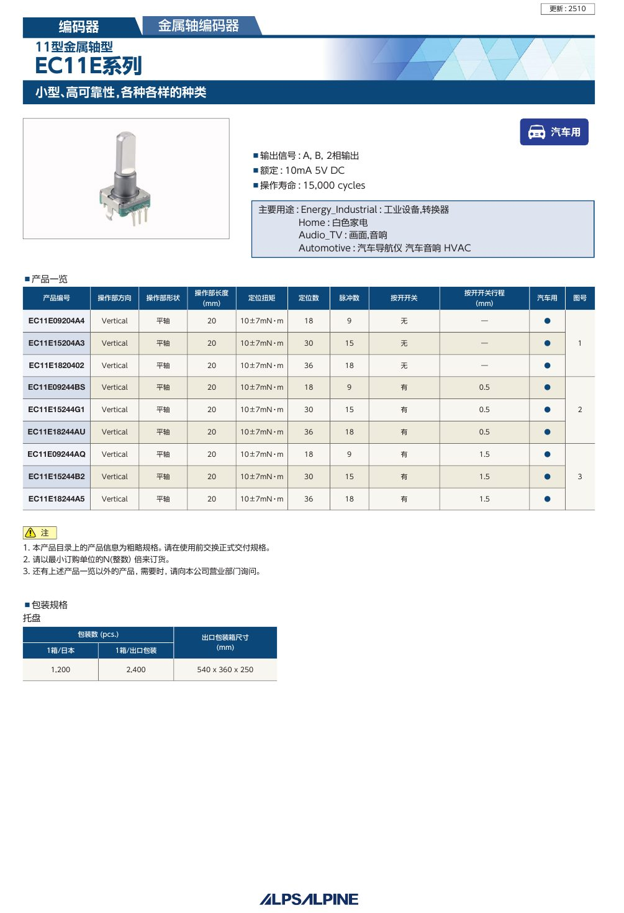
ALPS EC11 旋转编码器：11 mm 金属轴增量脉冲与可选按压开关
ALPS EC11 是 11 mm 规格的金属轴增量式旋转编码器：旋转时输出 A、B 两相脉冲，用来判断方向和格数；带按压的型号另有一套沿轴向的开关，和旋转编码不是同一套机构。目录中的 EC11E 系列额定 10 mA 5 V DC、操作寿命 15,000 cycles，定位扭矩 10±7 mN·m，定位数/脉冲数有 18/9、30/15、36/18 三档，轴长示例 20 mm，带开关时行程有 0.5 mm 或 1.5 mm。不要把它写成硅胶按键、锅仔或机械轴体那种“通用按键”。
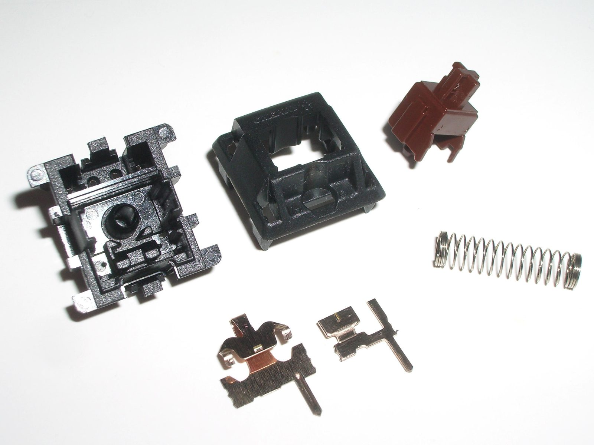
Cherry MX 机械键盘轴：轴心、螺旋弹簧与金交叉触点
Cherry MX 是独立的机械轴体，不是笔记本里的剪刀脚或蝶式支架：键帽插在轴心（stem）上，轴心在壳里竖直滑动，螺旋弹簧负责回弹，轴心再驱动两片交叉的金属触点接通。官网页把这种触点叫做 Gold Crosspoint，两片三角形截面的触点相互垂直相切。以现行 MX2A RED 为例，数据表给出线性特性、操作力 45 cN、预行程 2 mm、总行程 4 mm、初压力 30 cN、末压力 100 cN、寿命大于 1 亿次。本篇对照已收录的 16 英寸 MacBook Pro 剪刀脚键盘：1 mm 键程与交叉支架（对照蝶式）：那边是整片键盘上的交叉支架 + 橡胶穹顶，这里是一颗可单独拆装的轴。
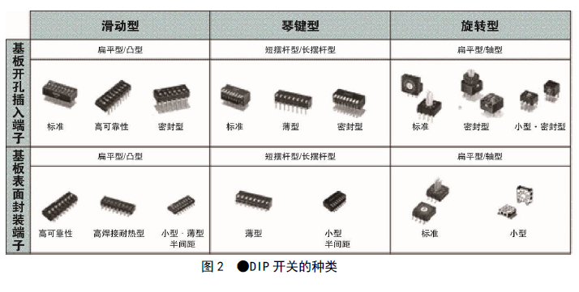
DIP 滑动拨码开关：挡块推动 V 形滑块，使一对镀金固定触点接通或断开
DIP 拨码开关是一排做成像集成电路双列直插（或对应的表面贴装）外形的小型设定开关：每个键位用挡块推动 V 形金属滑块，把基座上的一对固定触点接通或断开，用来在 PCB 上设置模式，而不是给人频繁点击。立创介绍的一般构造是罩盖、挡块、滑块和基座四件；标准端子间距 2.54 mm，另有 1.27 mm 半间距，高度除普通 3.5 mm 外还有 2.2 mm 和 1.55 mm 的低矮型。它既不是钢琴键那种长摆杆按压外形，也不是旋转 BCD 编码开关用一圈档位输出 4 位代码。

IBM Beam Spring键：片簧越中反转并向上提起飞板
柱塞向下压弓形片簧，片簧越中过后通过U形飞簧将电容飞板向上提起；按下键帽与感测板的运动方向相反。

IBM屈曲弹簧键：螺旋簧失稳产生力矩，驱动翻转锤
压缩螺旋簧并非只提供线性回弹，达到临界状态后侧向屈曲产生力矩，使下方枢轴锤翻转；手感与触发由同一失稳事件关联。

KSD301 突跳式温控器：蝶形双金属片到位后瞬间切换触点
KSD301 把一片蝶形双金属片装在带铝盖的电木或陶瓷壳里：温度到达设定值时，碟片瞬间翻转到另一侧，带动动簧片使触点迅速断开或接通，冷却后再翻回。创华维规格书给出动作温度范围 −20～255 °C，额定电流 5 / 8 / 10 / 15 / 16 A，电气寿命在额定功率、功率因数 0.8 下动作 10000 次后，温度变化应在初始值的 ±7 °C 以内。它不是电子探头加继电器，也不是缓慢弯曲、触点慢慢分开的非突跳双金属条。

PCB功率继电器：线圈吸合衔铁带动触点，线圈与触点高压隔离（以 Omron G2R 为例）
电磁继电器用线圈里的电流建立磁路，让衔铁克服返回弹簧被吸向铁芯，再带动触点闭合或转换；线圈断电后弹簧把衔铁拉回，触点回到原来的常闭或常开状态，从而实现用较小的控制电流去开关另一路负载。芯三七把典型结构分成电磁系统（铁芯、轭铁、衔铁、线圈）、接触系统和传动复原机构。Omron G2R 把这一结构做成印制板功率继电器：单极 10 A、双极 5 A，线圈与触点之间的耐压 5,000 V，浪涌耐受 10,000 V，动作时间最多 15 ms。它不是热磁断路器，也不是已经单独成篇的交流接触器。
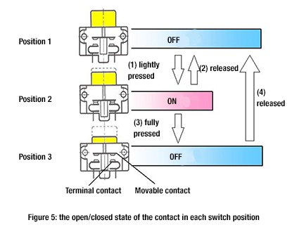
三位置使能握持键：松手OFF、轻握ON、过握OFF且回程不再导通
使能按钮只有中段行程允许工作；松手和惊慌时握得更紧都使触点断开，并且从最深位置释放时不再次使能。

安全门舌片联锁：专用执行器转动内凸轮，以直接断开动作打开 NC 触点
舌片式安全门联锁把开关本体装在机器上、把专用执行器装在门上：关门时执行器插入并转动内凸轮，NC 触点靠弹簧力闭合，控制系统判定门已关闭；开门时凸轮把 NC 触点强制推开，切断电路，即使启动按钮被按下机器也不能再开。IDEC 强调这种「直接断开动作」要求执行器到 NC 触点之间只有非弹性结构，即使触点已经熔焊，开门的力仍能把触点分开。它不是普通限位开关，也不是用螺丝刀就能拨动的门磁。

工业限位开关：在微动开关外面加防护壳和滚轮杠杆等致动器
工业限位开关（行程开关、极限开关）不是再发明一种触点，而是把一颗快动微动开关装进金属或强化树脂外壳，再配上柱塞、滚轮或杠杆等致动器，用来在机台外侧承受撞击、油水和粉尘。庆丰把它概括成「同一颗心脏，差在有没有穿盔甲」。天得 TZ 系列限位开关在庆丰文中的口径是防护 IP65–IP67，机械寿命 1000 万次、电气寿命 50 万次；同文列出的裸微动例如 Omron V-15 可到 250 VAC / 15 A，与库内已收录的鼠标用 D2FC（6 VDC / 1 mA）不是同一使用场合。
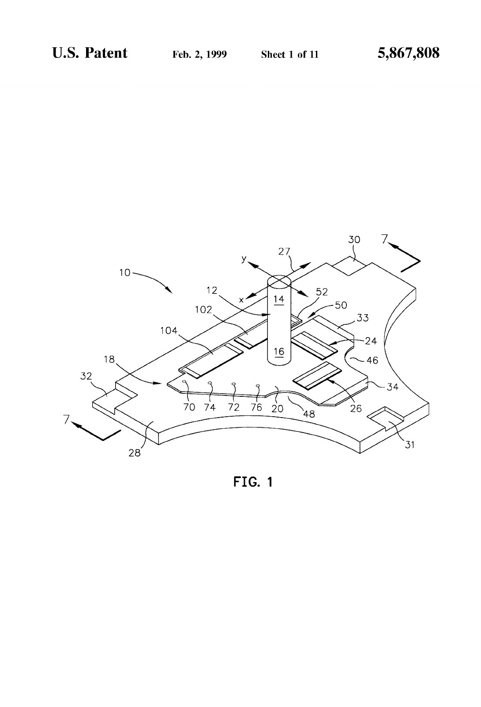
应变式指点杆：十字薄片根部弯曲，将侧向按力变成二维输入
短杆把侧向指力传到十字薄片根部，利用局部弹性应变而非万向框大角度转动感测方向；这是近等长力输入的扩展结构。
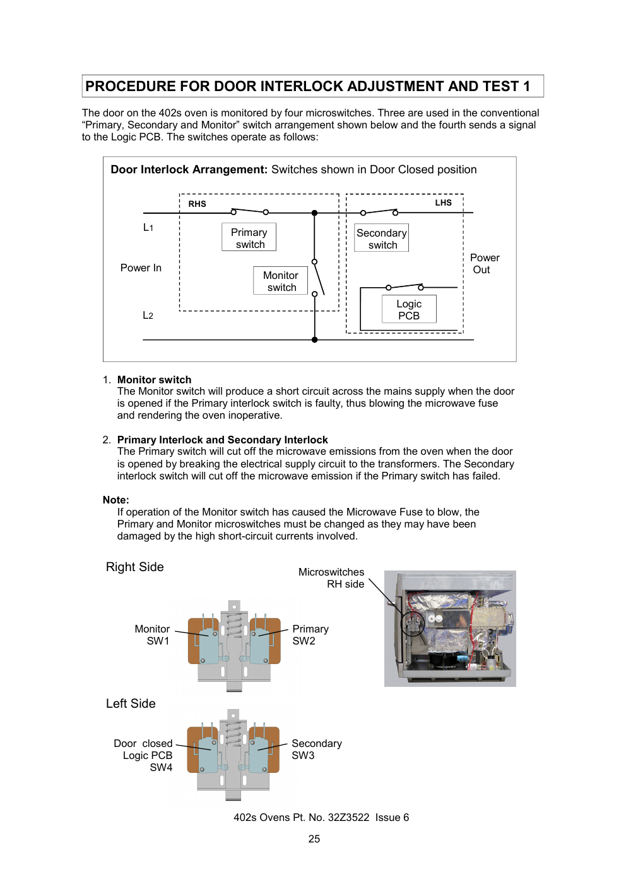
微波炉门三联联锁：第一、第二联锁断开供电，监控开关在门开时短接熔断保护
微波炉用门钩去按一组微动开关，而不是只靠一只门磁：关门后第一、第二联锁开关接通，给高压变压器等供电，同时门监控开关断开；开门后两只联锁先断开切断供电，监控开关再接通，一旦联锁拒动或粘连，监控开关就把电源短接，让熔断器断开，避免炉门打开时仍在发射微波。导文对格兰仕 WP700（P7021TP-6）的拆解写明，这一先断后通的时间差由下门钩的曲线长度决定；Merrychef 402s 则用教科书式的 Primary、Secondary 和 Monitor 布置，并另加第四只开关给逻辑板发门状态。它不是普通门控微动的简单并联，也不是机床舌片安全门联锁。
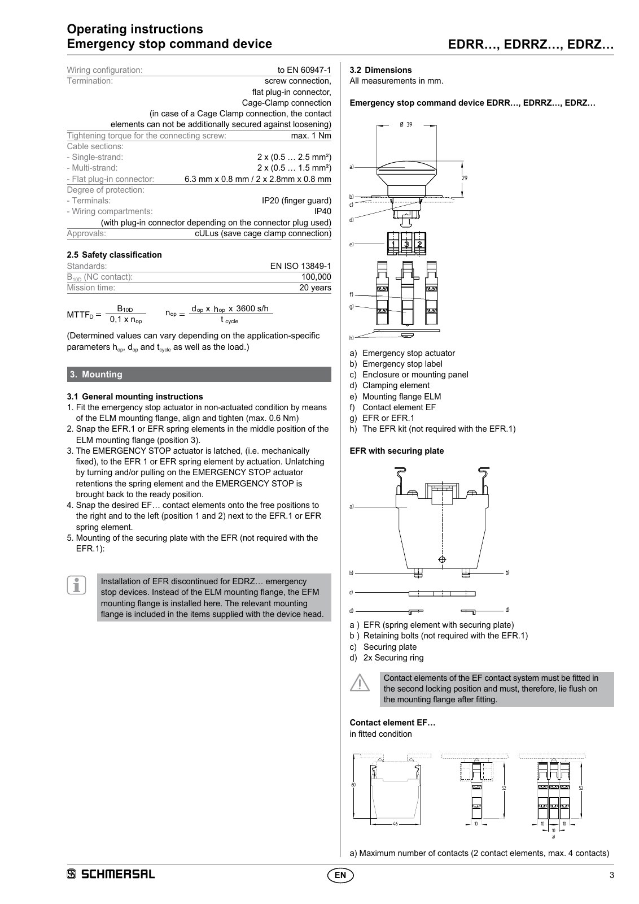
急停蘑菇头：机械保持、刻意复位与触点脱落向安全侧断开
急停按下后机械保持，必须旋转或拉拔复位；直接断开与接触块脱落时断开是两条不同的安全链，不等于普通自锁按钮。
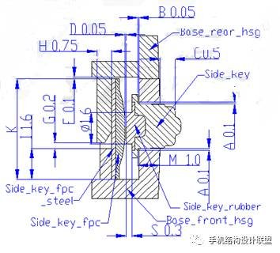
手机侧键传力结构：键帽、软胶导电基与壳体间隙链
手机侧键的关键不是再设计一套硅胶鼓或锅仔的力值曲线，而是**键帽如何把侧向按压传到壳内的轻触开关或锅仔**，以及壳体开孔、软胶裙边、FPC 支撑筋这一串间隙。艾邦转载的设计规范把行程定为推动开关或 FPC 侧键约 0.20–0.25 mm，并给出键帽–壳体、导电基–开关、裙边避让等一串经验间隙；工作熊拆解的 Sony Ericsson W550i 则展示了一种真实做法：塑胶帽套在橡胶薄膜上，靠壳体卡槽定位，FPC 折弯后把开关贴在侧壁，下面垫泡绵做缓冲。文中毫米数一律视为该规范/拆解的经验值，不要写成某款量产机的官方规格。

手柄十字键：中央半球支点与四向弹性触点的倾转选择
一个十字形键帽围绕中央半球支点倾转，外围四个压点选择导电胶触点，中央支点承担反力并限制整键直接平移。
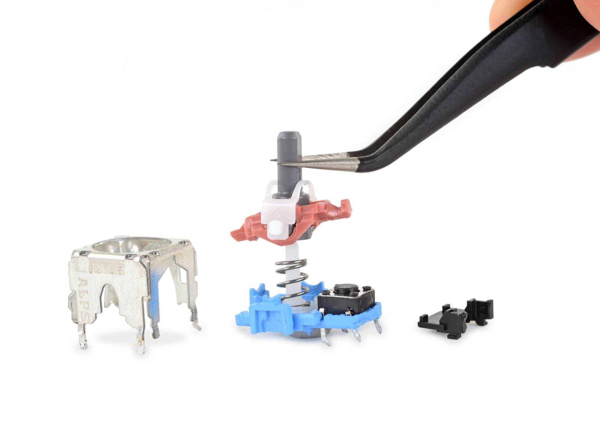
拇指摇杆万向导向：正交转动框与中央弹簧回中
摇杆用正交运动约束把任意方向倾斜分解为X/Y两轴，中央回中弹簧负责释放后回正；电位器、霍尔或光学读数不另算新机构。

旋转BCD编码开关：编码转子把档位编成4位代码（对照 Nidec SC 与 Omron A6A）
旋转 BCD 编码开关用一圈档位代替一排滑动拨码：转到某一格时，编码转子（或旋转电路板）按 1-2-4-8 的组合接通若干端子，输出十进制或十六进制代码。Nidec SC-1000 为 16 档、步进角 22.5°，SC-2000 为 10 档、步进角 36°，调节力矩 4–20 mN·m，外壳里有不锈钢卡嗒簧和硅橡胶 O 形圈，切换额定 DC 5 V / 100 mA。Omron A6A 同样提供 10 位十进制和 16 位十六进制（及反码），但把稳定接触写成「滑块锁 + 旋转 PCB」，内部密封等效 IP64，电气寿命至少 2000 步，额定 0.1 A / 28 VDC，操作力矩 1.18–2.45×10⁻² N·m。它不是 EC11 那种连续旋转出脉冲的增量编码器。

旋转凸轮开关：每一级最多两个触点，由凸轮按档位独立通断
旋转凸轮开关用一根操作轴带着多级凸轮，每一级最多布置两个触点，手柄转到某个角度时，该级凸轮决定这两个触点是接通还是断开，从而组合成多回路、多档位的控制逻辑。Kraus & Naimer Catalog 120 把 CG、CH、CHR 系列写到 25 A，档位角为 30°、45°、60° 或 90°，并给出三种接触系统：刚性双断银合金桥、多点交叉触点，以及用于低电压的镀金十字线 H 桥。它不是编码拨盘，也不是只有一对触点的钮子开关。

机械式膜片与活塞压力开关：预紧弹簧设定动作点并触发微动开关
机械式压力开关不靠电子采样，而是让过程压力作用在膜片或活塞上，去克服一颗预紧弹簧；弹簧力由调整螺钉设定，测量元件的位移再触发电接点（常见为微动开关）。WIKA 介绍的紧凑型 PSM01 / PSM02（可调迟滞）带快插端子时高度为 50 mm，扳手宽度 24 和 27；膜片式版本最大可开关至 1.6 MPa，活塞式开关范围高达 32 MPa，过载安全限值可到膜片式 6 MPa、活塞式 35 MPa。它不是电子压力传感器加比较器，也不是把压力直接接到大电流主触头上。

机械快门线：柔性芯与固定外套的反力闭环，远置按钮不传手部晃动
手持柱塞推动柔性芯，外套两端固定提供反力，末端小顶针压相机快门；不是电缆信号，也不是气动软管。
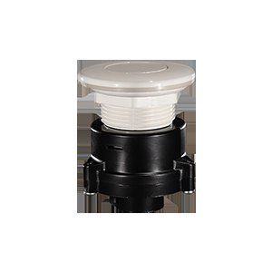
气动远置按钮：压缩气腔、软管与隔离的电气开关
按钮不是在面板后直接压电触点，而是压缩气腔，经软管把空气脉冲传给远置空气开关，使用户操作端与带电端分离。

滚珠倾斜开关：导电滚珠在重力下滚离凹槽，与导电凸点接触导通
贴片式倾斜滚珠开关在水平放置时，金属滚珠被限位台阶挡在凹槽里，不碰到导电凸点，电路断开；壳体倾斜到设计角度后，滚珠滚出凹槽并与凸点接触，输出一个简单的通断信号。颖鑫把内部零件写成金属座、金属滚珠、绝缘体、金属塞和限制器，并指出它比 MEMS 角度传感器精度低，但更省电、更小、成本更低。百灵 BL-3300 给出可核对的分档：直立时断开，向任一方向超过 25±10° 或 45° 后导通，电压 1.5–12 V，电流 20 mA，寿命 10 万次。它不是水银开关，也不是连续输出角度的惯性传感器。
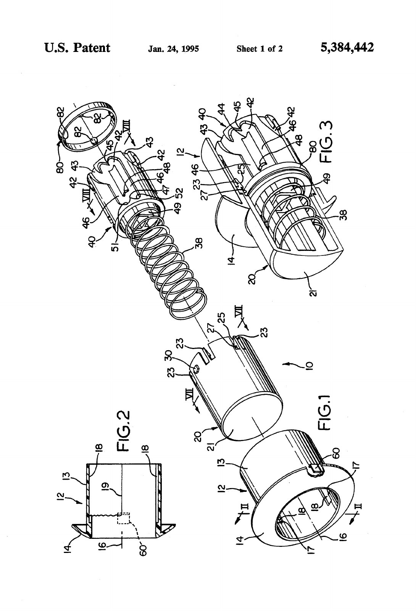
灶具旋钮轴向解锁：先推或拉解除转动约束，阀芯压紧与解锁分工
旋钮的轴向动作不是独立电按钮，而是改变转动许可；必须先解除几何锁止再旋转，阀芯密封预压与解锁回位不能混作一根弹簧。
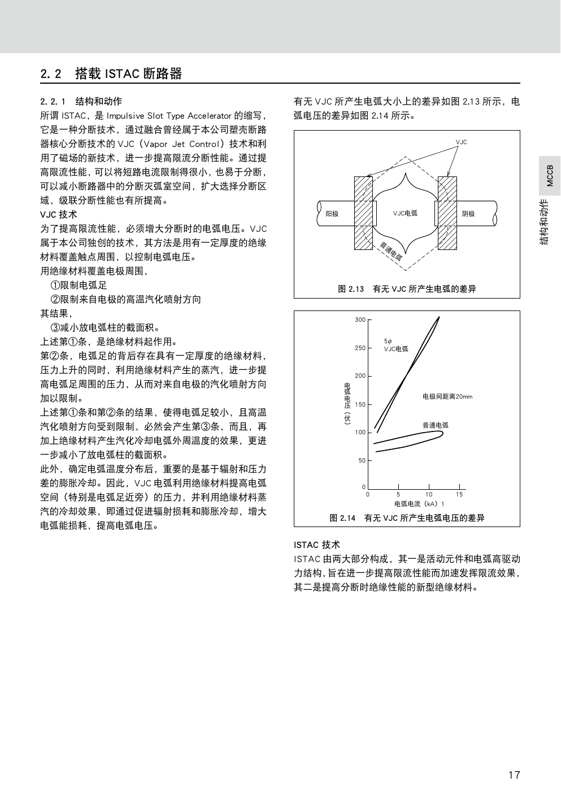
热磁脱扣断路器：双金属片过载延时、电磁铁短路瞬时，经自由脱扣机构分断触头
热磁式断路器在合闸后靠锁钩把主触头保持在接通位置：一般过载时，电流还不足以让电磁脱扣动作，但热元件让双金属片弯曲，推动杠杆使搭钩脱开，主触头在反力弹簧作用下分断；短路或严重过载时，电流超过瞬时整定值，电磁铁吸合撞击杠杆，同样让锁扣脱开，迅速切断电路。三菱资料还说明开关机构用肘杆和拉簧实现快速闭合、快速分断和自由脱扣，脱扣后手柄停在 ON 与 OFF 之间，且各极的双金属片和电磁铁都作用到同一根共用脱扣轴，任何一极过流都会让所有极同时分断。它不是只能熔断一次的保险丝，也不是电子采样的剩余电流保护器。

相机两段按键：上下金属动触点与分级力行程，不把两路电信号当两级手感
同一按压路径中上下两组动触点依次动作，以不同力值和行程区分半按和全按；必须同时核对机构与力行程表。

硅胶导电按键：斜壁荷重、碳粒与排气槽
硅胶导电按键用鼓包斜壁提供回弹和按压力，按压柱底面的碳粒（或镍粒、金粒）直接去闭合 PCB 上的触点；底面必须开排气槽，否则腔内空气会变成气垫，松手还可能倒吸回不来。它不是键盘里的剪刀脚或蝶式支架，也不是单独一颗金属锅仔片——硅胶鼓包本身就是弹性件和（多数时候的）开关。

翻盖式按键防误触：铰链、自动回盖弹簧与独立按钮
在普通按钮外增加必须先掀开的刚性盖，盖绕铰链打开后才露出操作面；开盖力、按钮力和密封等级需要独立定义。

联排按钮共享闩条：按新键释放旧键，互锁不自动等于禁止双按
各按钮上的斜面／凸肩推动一条横向闩条，越过斜面后在倒扣处保持；另一个按钮推动闩条即可释放先前选择。
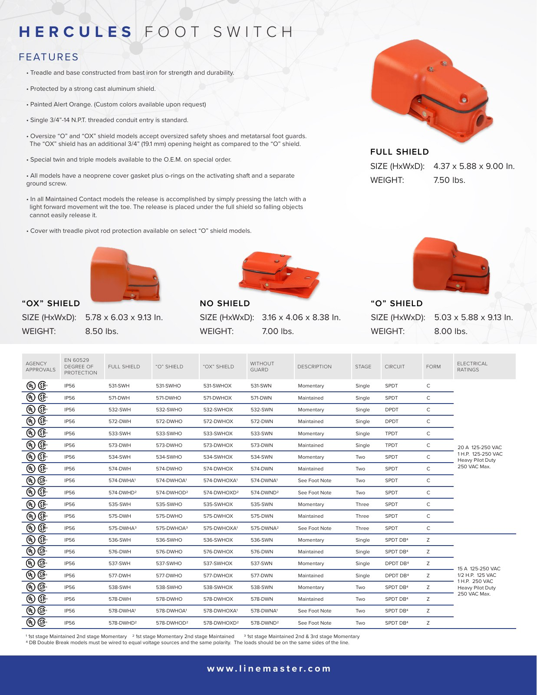
脚踏开关：后铰轴踏板、独立防护罩与多级操作边界
踏板绕铰轴把脚力转为内部开关动作，外部罩承受掉落物并限定脚的进入方向；踏板机构与罩不能混为一个防水零件。

苹果蝶式键盘（反面案例）：变薄 40% 的代价与硅胶防尘膜补救
2015 年苹果为了把 12 英寸 MacBook 做到 13.1 mm，用「蝶式」结构替代剪刀脚：苹果称它比传统剪刀脚**薄 40%、稳 4 倍**，整个键盘薄 34%。代价是键程很短，键帽下的间隙也小，一粒灰就能卡住。2018 年第三代在支架上盖了一层冲切硅胶膜，iFixit 用荧光粉测试证明它能把大部分粉尘引到键帽边缘，但用沙子打一分钟字，**沙粒仍会从膜角上的孔钻进去卡死按键**；整块键盘还被铆钉、五星螺丝和胶固定在 C 壳上，几乎没法单独更换。2019 年 16 英寸 MacBook Pro 改回剪刀脚，键程 1 mm。
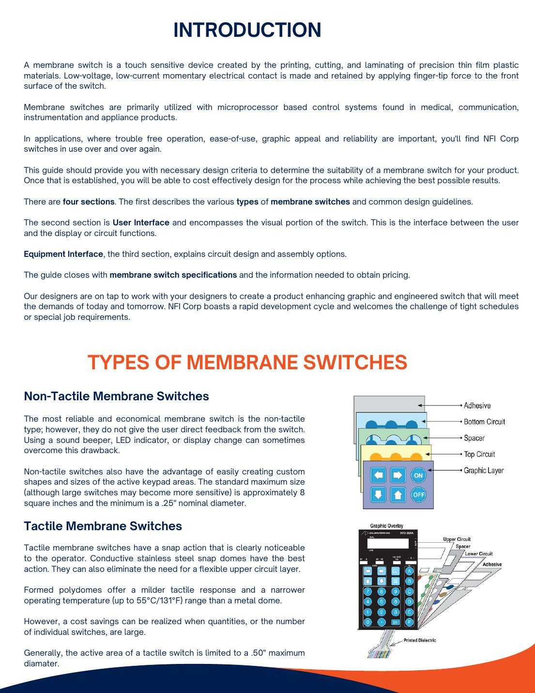
薄膜开关叠层：面板、间隔层、电路层与开窗排气
薄膜开关的主角是一层层 PET（或 PC、FPC、PCB）贴合出来的整张面板：最外是图文面板，中间是开了窗的间隔层，下面是电路层；按下时窗里的空气被挤走，触点闭合，松开后再分开。触感可以靠不锈钢弹片或面板凸包来加，但弹片只是叠层里的一层，不是本篇的唯一零件。排气开窗要在间隔层里设计好，否则手感发闷，密封场合还要决定用内排气还是排到产品内部。

跷板开关的弹簧柱塞：滑动压点、摇动触桥与中位自定心
外部跷板带着弹簧柱塞沿触桥滑动，压点跨越支承位置后改变触桥姿态；柱塞端部与触桥的匹配决定中位一致性。
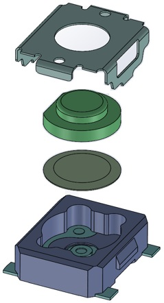
轻触开关壳体封装金属弹片：盖板、推杆与锅仔片反转导通（以 Omron B3F 为例）
轻触开关把一枚金属弹片（锅仔片）连同推杆、盖板、基座和端子封装成一颗可焊接的元件：按下超过阈值后弹片反转，中心触点与边缘触点连通并给出咔哒手感，松手后弹片复位、电路断开。它不是直接把裸锅仔片阵列贴在薄膜或 PCB 上，也不是硅胶鼓用碳粒导通。以 Omron B3F 为例，6×6 mm 型机械/电气寿命为 100 万次，12×12 mm 型为 1000 万次；6×6 mm 标准型操作力分 0.98 N、1.47 N、2.55 N、4.9 N 四档，预行程 0.25 +0.2/−0.1 mm，额定 1–50 mA、3–24 VDC。
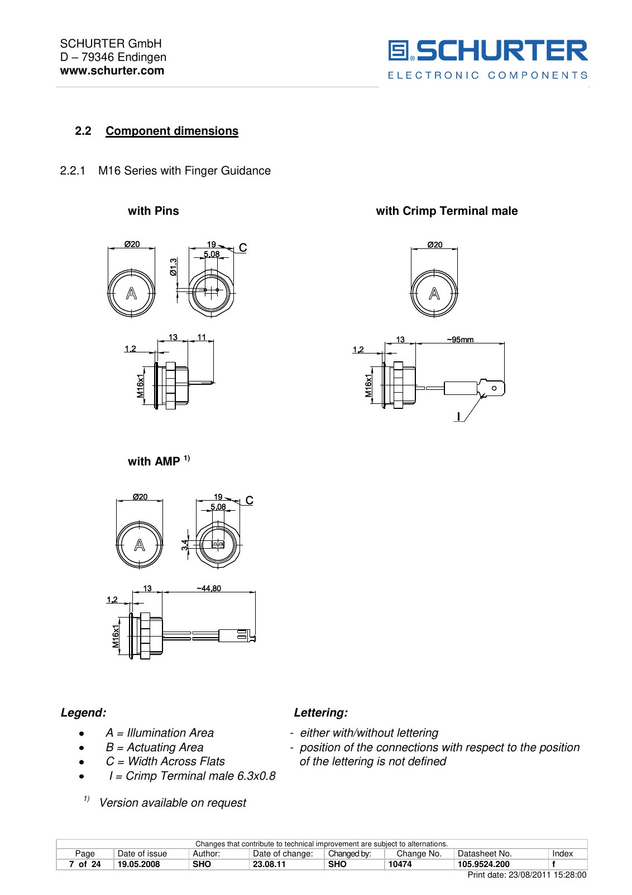
金属压电按钮：连续金属面微挠曲，无可见滑动键程的扩展案例
连续金属操作面受力微挠并向压电片传力，没有穿壳滑动柱塞或翻转触点；输出通常是脉冲而非按住就持续闭合。

金属锅仔片阵列：直径、力值、行程与寿命互换
金属锅仔片是一枚双稳态金属圆片：按到峰值力后中心塌陷，发出「咔嗒」并接通电路，松手弹回。直径、力值和寿命要一起选——Snaptron 手册里，同是 6 mm 的 F06180（180 g）寿命做到 500 万次，F06300（300 g）却只标 1 万次。硅胶在这里如果出现，只是上面的传力帽；PET 叠层如果出现，只是定位和电路的配角，主角仍是这枚金属圆片。
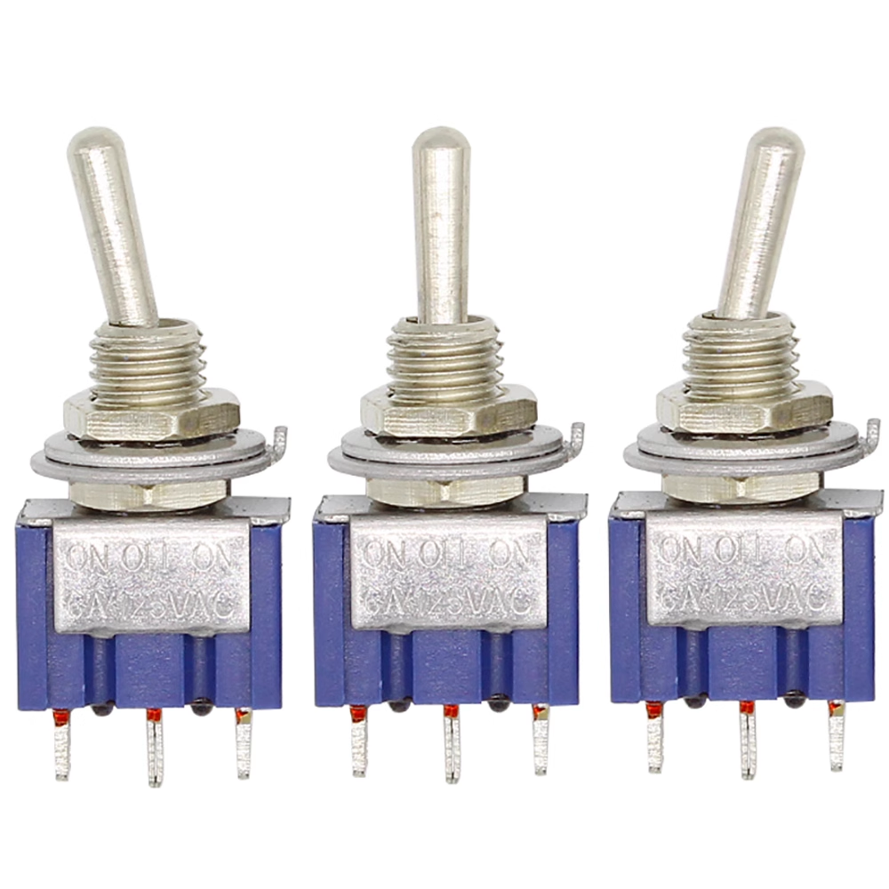
钮子拨杆开关：手柄过中后压缩弹簧把动触点快速切换到另一侧静触点
钮子开关（拨杆开关）用外露手柄拨动内部滑块和动触点：手柄被扳到中位附近时压缩弹簧继续储能，一旦越过垂直临界位置，弹簧就把滑块连同动触点迅速推离一侧静触点、接到另一侧，形成比手拨更快的分断。它不是跷板开关那种外部翘板带着柱塞在触桥上滑过，也不是轻触开关那种短行程金属弹片。云恒与利托都强调这种快动是为了缩短触点缓慢接触产生的电弧；两文都没有给出某一具体型号的额定电流、行程或寿命数字。

键盘内胆Gasket悬置：把按键触底载荷从刚性螺柱改经弹性垫传到壳体
轴、定位板和PCB形成内胆，由周边Poron垫与壳体隔开；研究的是整块支承系统的缓冲，不是另一颗轴体。

长键卫星轴：双滑块与弯钢丝同步，偏心按压不再单端下沉
大键在主轴两侧增加无独立回位弹簧的导向滑块，用弯钢丝传递两端转角；研究对象是偏心载荷的同步约束，不是再收一种机械轴。

鼠标分体主键预压：独立键板、金属枢轴与弹簧张紧
把主键从整片外壳的弯曲中分离，借助枢轴和张紧弹簧控制空行程；研究键板到微动之间的上游传力，不重复微动内部簧片。
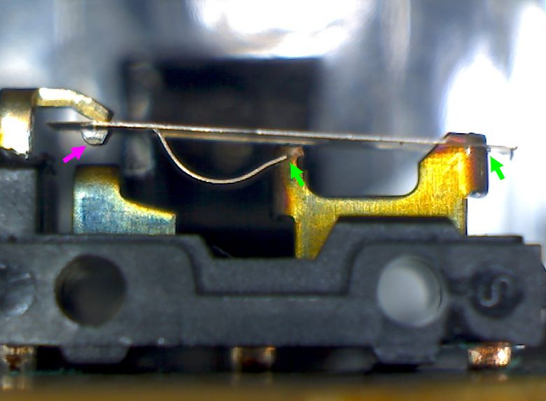
鼠标微动开关（Omron D2FC）：杠杆、簧片翻转与触点
鼠标里常见的「咔哒」不是 MX 那种十字轴体，而是一颗超小型瞬时微动：按钮把力传给内部的弹性杠杆/簧片，簧片在缺口里翻过死点，银触点迅速闭合，松手后簧片翻回。Omron 称之为 Ultra Subminiature Basic Switch。以 D2FC-F-7N（20M）为例，数据表给出操作力 0.59 ± 0.15 N、预行程 0.3 ± 0.2 mm、超行程至少 0.2 mm、机械/电气寿命至少 2000 万次。拆解文章显示：簧片必须准确挂在壳体缺口里，位置差一点开关就不再工作。
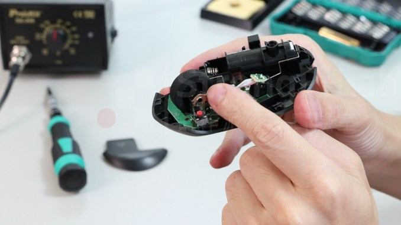
鼠标滚轮编码器：机械触点码盘与光栅遮光两种取信号方式
鼠标滚轮要把旋转方向和步进传给主控，常见有两条路：机械式编码器由滚轮带动转盘，转盘上的触点与底座固定触点时通时断，形成两路错开的开关信号；光栅式则在滚轮上开一圈格子，两侧用红外发射和接收，格子转过时光线被反复挡住或透过，芯片根据光脉冲的先后判断方向和速度。TTC 写道，机械式因为有触点摩擦，手感和定位比较明确，寿命从早期的 10 万圈发展到其 2017 年宣称的 200 万圈；光栅式工作时几乎没有实质性接触，稳定性好，但灯源会衰减。它不是旋钮电位器，也不是已经在库中的 EC11 那种带柄编码器本体的重复堆叠。
按压弹跳(Push-Push) 5 篇

Blum TIP-ON 按压弹开抽屉：柜体轨弹簧单元与抽屉锁止模块
Blum TIP-ON 做无拉手抽屉，不是把一颗心形槽锁嵌进门板那么简单：柜体轨上预装带弹簧的弹出单元（驱动件），抽屉底板下再装锁止/关闭模块；按一下面板内移，模块释放，轨上弹簧把抽屉弹出一段，再用手拉开。宽抽屉要加同步杆。它和 Nifco/ITW 那种单点撞销锁、以及按动笔的旋转凸轮，不在同一个装配层级上。

Nifco 经典心形槽 Push-Push：U 形销与片簧（对照 ITW 防变形版）
Nifco 专利 US4660871 把按压弹跳做成「平面心形变深槽 + 金属 U 形销 + 片簧」：U 形销一端走滑块顶面的心形槽，另一端铰接在壳体孔里，片簧始终把销压向槽底；槽底深浅台阶逼销单向绕心形走一圈，按一下锁、再按一下弹开。滑块下方还有斜向卡爪去抓门板上的撞销。这和 ITW 用塑料随动件加导槽强制开合夹爪、以及按动笔用同轴旋转分度凸轮，都不是同一套零件。

SD 与 microSD 推推式卡座：心形槽滑块与卡片当撞销
推推式 SD / microSD 卡座把心形槽或凸轮槽做在卡座滑块上，存储卡本身就是撞销：推进去锁住，再按一下弹出。行程和弹出距离是连接器规格，不是家具锁的门缝。以 JAE ST5 为例，microSD 侧是反向安装的 push-push，按入行程 1 mm、弹出 3.3 mm，并带半锁和防飞卡；零件清单里明确有不锈钢凸轮随动件（cam follower）。

按动圆珠笔：旋转凸轮的按压伸缩机构
按动笔用「按钮/推杆（plunger）+ 可旋转凸轮体（cam body）+ 笔杆内固定挡块（stop members）+ 弹簧」组成旋转分度机构：每按一次凸轮体转一格，交替落在挡块顶上（笔芯伸出锁定）或滑进挡块间隙（笔芯缩回）。
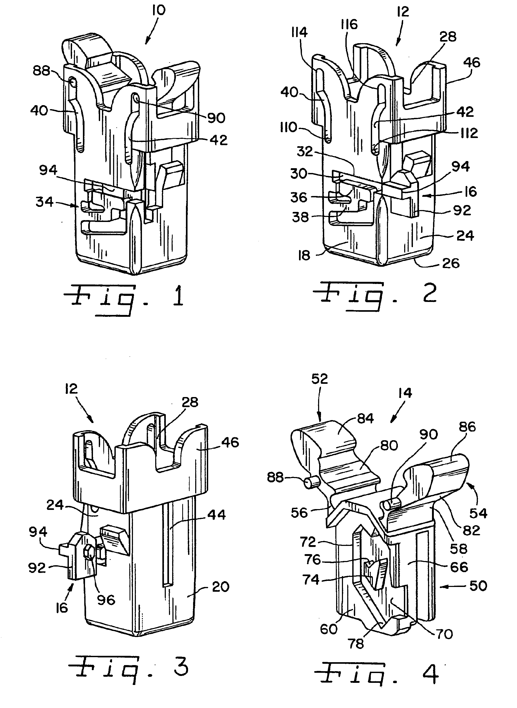
防变形静音 Push-Push 按压弹跳锁（ITW 专利 EP1596030）
经典的按压弹跳锁用「心形槽 + 随动销」实现按一下锁、再按一下弹开；这件 ITW 专利针对夹爪长期闭合后塑料蠕变（set）张不开、刮住撞销发出噪音甚至打不开的问题，在每个夹爪上加一根销、插进外壳上的斜向导槽，让夹爪在每次动作时被**强制**完全张开/闭合。
锁扣与快拆 29 篇
Blum TIP-ON 按压弹开抽屉：柜体轨弹簧单元与抽屉锁止模块
Blum TIP-ON 做无拉手抽屉，不是把一颗心形槽锁嵌进门板那么简单：柜体轨上预装带弹簧的弹出单元（驱动件），抽屉底板下再装锁止/关闭模块；按一下面板内移，模块释放，轨上弹簧把抽屉弹出一段，再用手拉开。宽抽屉要加同步杆。它和 Nifco/ITW 那种单点撞销锁、以及按动笔的旋转凸轮，不在同一个装配层级上。
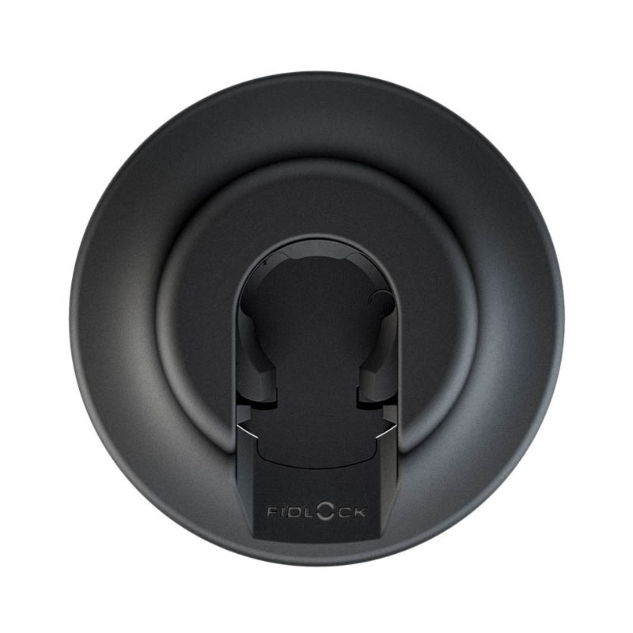
FIDLOCK SNAP：圆形磁吸按扣侧向滑开（对照 V-BUCKLE 上掀）
FIDLOCK SNAP 是一对圆形公母按扣：靠近时钕磁铁把两半吸到一起，机械卡口自动锁死；开启不是上掀，而是沿侧向把公件滑出（规格书统一写 Opening: slide sideways）。它和库内已有的 FIDLOCK V-BUCKLE：磁吸引导到位后再由机械扣锁死 同属「磁吸引导 + 机械锁、开启方向与闭合方向不同」，但几何完全不同：V-BUCKLE 是织带扣、掀盖/拉片打开，SNAP 是可螺丝或缝纫到面料上的圆形按扣。

FIDLOCK V-BUCKLE：磁吸引导到位后再由机械扣锁死
FIDLOCK 的核心不是「用磁力抓住负荷」，而是：磁铁把公母拉到对位，弹簧/机械扣再咬死；打开时先把机械扣错开，磁力随之减弱，两半才能分开。V-BUCKLE 把这套概念做成一块不锈钢 V 形翻盖：合上时磁吸引导自动扣上；拉开翻盖上的拉片即可打开；而且载荷越大越难打开（官网所称 self-securing）。这和 任天堂 Switch 2 Joy-Con 2 磁吸连接 那种「磁铁定位 + 电触点」、主要靠磁力保持的连接不是同一件事。

GoPro 快拆卡扣与指旋螺母：两爪弹性卡入和螺钉夹紧是两套锁
GoPro 的安装接口其实是两套锁，不要混成一件事：一套是卡扣底部两根又薄又有弹性的卡爪，推入粘贴底座（或同类底座）卡住，用来在底座和卡扣之间快拆；另一套是相机（或卡扣）上的折叠安装指交叉叠好后，用指旋螺母穿过去夹紧。社区测量螺纹多为 M5×0.8，牙长大约 18–20 mm；官方规格两篇测量文都写「厂家没公布」。本篇写的是安装接口，不是机身防水，对照见 GoPro Hero4 Session 免外壳防水机身。
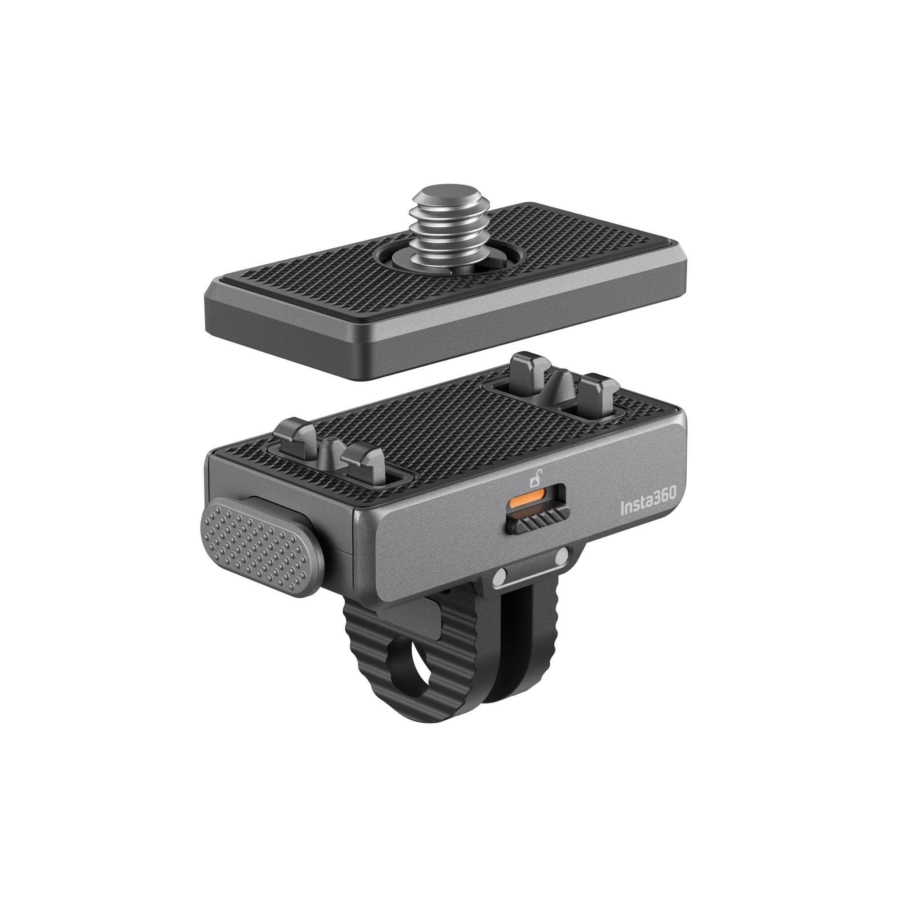
Insta360 磁吸快拆配件 2.0：磁铁对中后由滑动锁承力
Insta360 磁吸快拆配件 2.0（CINSEAVP）用磁铁把底座吸到相机底部的正确位置，真正承力的是必须拨到位的滑动锁：橙色标记完全露出才算锁死；拆卸要先把滑锁拨回，再按住侧面释放按钮才能拉开。官网明确警告：不要在剧烈振动、高频冲击（如越野骑行）中使用，否则可能跌落损坏相机。

Mac Pro 2019 旋转把手外壳锁与免工具模块锁
2019 款 Mac Pro 顶部第三个把手是外罩的锁：旋转把手后直接向上拔，整个外罩滑出，没有螺丝和胶；外罩一拿掉，电源键下的 pogo pin 与外罩上的触点断开，整机断电（安全互锁）。机内再用「一个拨杆锁住全部 PCIe 卡」「拉杆带两组滚轮推出 MPX 模块」等免工具锁扣，iFixit 给出 9/10 可维修分。

Nano-SIM 针顶出托盘（Pin-eject）：外部顶针把客户自制托盘顶出
Nano-SIM 的针顶出（Pin-eject / Push-Eject）卡座不是心形槽推推机构：用户把顶针插入壳体侧孔，推动座内的顶出杆/杠杆，把**托盘**顶出；托盘常常由客户按手机外观自制，座子负责触点、检测开关和顶出机构。JAE SF70：高 1.25 mm、宽 13.3 mm、长 14.8 mm，6 针，0.5 A / 10 V，插拔寿命最多 5,000 次，检测开关为常开，并有防跌落的托盘锁。对照已收录的 SD/microSD 推推卡座：那是心形槽滑块、卡片自己当撞销；本篇不要写成 JAE SF72 那种推推式 SIM 座。
Nifco 经典心形槽 Push-Push：U 形销与片簧（对照 ITW 防变形版）
Nifco 专利 US4660871 把按压弹跳做成「平面心形变深槽 + 金属 U 形销 + 片簧」：U 形销一端走滑块顶面的心形槽，另一端铰接在壳体孔里，片簧始终把销压向槽底；槽底深浅台阶逼销单向绕心形走一圈，按一下锁、再按一下弹开。滑块下方还有斜向卡爪去抓门板上的撞销。这和 ITW 用塑料随动件加导槽强制开合夹爪、以及按动笔用同轴旋转分度凸轮，都不是同一套零件。
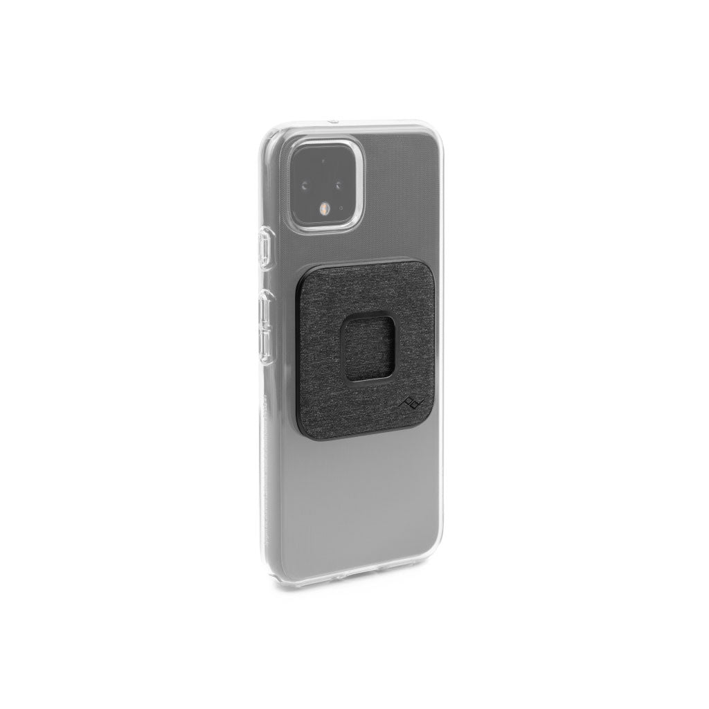
Peak Design SlimLink：方形陶瓷凹槽磁吸预定位与弹簧卡舌硬锁
Peak Design 的 SlimLink 把「磁铁预定位」和「机械硬锁」做在同一套方形接口里：手机壳或 Universal Adapter 背面有带陶瓷边缘的方形凹槽，凹槽周围藏磁铁；对接到 Out Front 这类硬锁支架时，磁铁先把接口吸准，两侧弹簧卡舌咬入凹槽锁死，按任意一侧按键即可释放。磁铁不是骑行时的主承力件。

侧向释放插扣（ITW SR 1）：双弹性卡臂、母座侧窗与中间翼
背包上最常见的侧释插扣，是一对带倒钩的弹性卡臂插进母座，钩子从母座两侧窗口翘出来锁住；两指向内捏卡臂，钩退出窗口，公端就能抽出。ITW 说自己的 Side Release 是这类功能的业界标准之一：中间杆上的翼（center bar wings）用来防止卡臂弯过头，并在冲击载荷下帮助释放；SR 1（101-0100）材料为 Acetal，尺寸 A 25.0、B 31.9、C 70.0、D 11.7 mm。专利 US7089633 用另一家公司的结构把「双卡臂 + 侧窗」写得更清楚，并加了一道中心钩加强——那是变体，不要当成 SR 1 的零件清单。

儿童安全瓶盖压旋锁：外盖与内芯齿平时不啮合，按下后啮合再旋转
压旋式儿童安全盖（push-down-and-turn CRC）把瓶盖做成可相对转动、轴向可压合的外盖和内芯：平时两圈齿不啮合，只转外盖会空转或发出嗒嗒声，带内螺纹的内芯不会被带动；向下按压后齿（或舌片与凸块）啮合，再旋转才能把内芯从瓶口旋下。ISO 8317 和美国 16 CFR §1700.20 规定的是整包开启测试方法，不是齿形、下压力或扭矩的结构尺寸。

带拉环弹簧分度销：弹簧保持插入，拉出后转 90° 停在槽上
带休息位的弹簧分度销（index plunger / 旋钮柱塞自锁型）靠内置弹簧把销顶进定位孔或 V 槽；要让开时，拉开环或旋钮使销缩回，再转 90°，让拉环落在槽口上，销就会保持缩回，松手也不弹回去。再拉一下转回 90°，弹簧又把销推出来。它不是球头快卸销：快卸销是按压按钮收起杆上的钢珠，以便从通孔里抽出整根销，本篇是带螺纹套的弹簧柱塞。
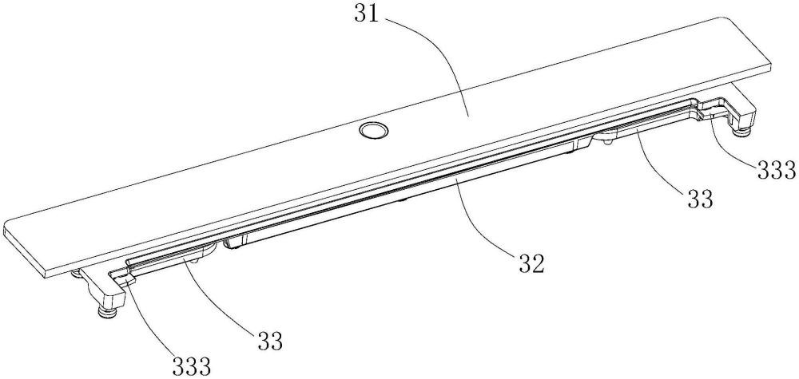
弹出式地面插座：按压锁条解锁后面板弹起（对照 TIP-ON 与心形槽）
弹起式地插要解决的是：不用时面板锁在地面齐平，用时按一下把锁打开，跳框带着插座弹起来。飞利富的锁定机构用一条长按键带动两根锁条转动，锁舌从跳框上收回；罗格朗则在产品层写清「关闭时锁住，先按按钮再后推，面盖才抬起，开到位后又锁在打开位置」。它和 Blum TIP-ON 按压弹开抽屉：柜体轨弹簧单元与抽屉锁止模块、Nifco 经典心形槽 Push-Push：U 形销与片簧（对照 ITW 防变形版） 都是「按一下再弹出」，但地插锁的是面板/跳框，不是心形槽里的撞销，也不是抽屉轨上的关闭模块。
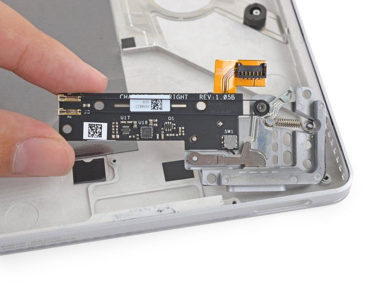
微软 Surface Book 形状记忆合金（肌肉线）电控分离锁
Surface Book 的屏幕和键盘底座之间靠「锁舌插进锁座、弹簧把滚子楔住」锁死；按键后给一根镍钛形状记忆合金丝通电加热，丝收缩约 3%，通过滑轮和摇臂把滚子拉开，屏幕就能取下。滚子同时充当「公差吸收器」，让锁座可以做到间隙 < 0.1 mm、几乎零旷量。
急停蘑菇头：机械保持、刻意复位与触点脱落向安全侧断开
急停按下后机械保持，必须旋转或拉拔复位；直接断开与接触块脱落时断开是两条不同的安全链，不等于普通自锁按钮。

手表折叠扣与蝴蝶扣：双按或掀盖释放，表带折叠后由卡舌锁住
手表折叠扣（deployant / 折叠扣）用一段或多段铰接金属片把表带在腕下折起来，合上后由卡舌、摩擦扣或额外的安全盖锁住；常见的蝴蝶扣是两端向中间对折的双折形式，很多带左右双按，必须同时按下两侧按钮，锁舌才让开，扣体才能打开。它要防的是「单手误触或刮蹭导致整表从手腕掉下」，和只靠针扣穿孔的皮带式表扣不是同一套锁。

柜用凸轮转舌锁：钥匙带动锁舌转过门框挡边（不是板式偏心轮）
柜用凸轮转舌锁（cam lock）的锁芯穿过门板，钥匙或方舌带动背面那一片金属锁舌，旋转约 90° 或 180° 后转到门框或锁扣板后面，形成挡边；反转则离开挡边，门就可以开。它不是家具里把两块板拉紧的偏心轮连接件（预埋螺杆 + 偏心轮），也不是带轴向压缩行程的压缩式门锁：本篇的锁舌主要是转过去挡住，目录若没有写出轴向压缩量，就不能当成压缩锁用。
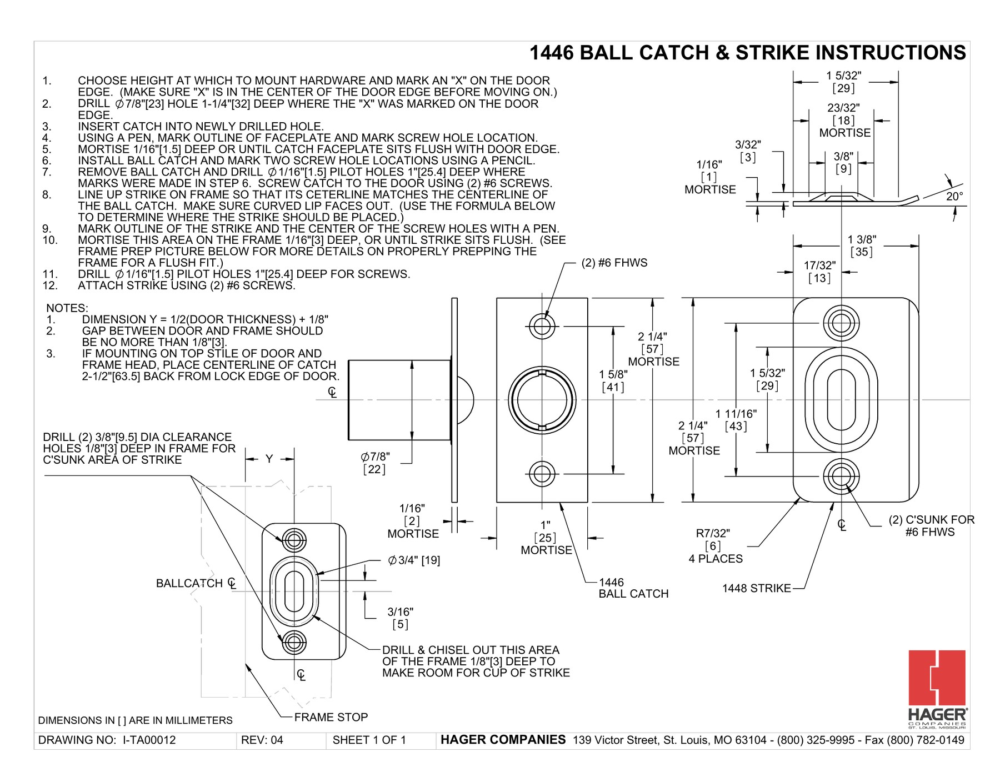
橱柜弹簧碰珠（Hager、Brusso）：弹簧把钢珠顶入锁片凹坑
橱柜弹簧碰珠是一种很小的机械门扣：弹簧把钢珠向外顶，门关上时钢珠先被压回去，再落入锁片上的凹坑（或锪窝），靠凹陷把住门。Hager 1446 是开槽暗装的面盖式，Brusso 是黄铜缸体压入门边。它和磁吸门吸都是「把门留在关闭位置」，但碰珠靠的是钢珠与凹坑的机械卡入，不是磁力。
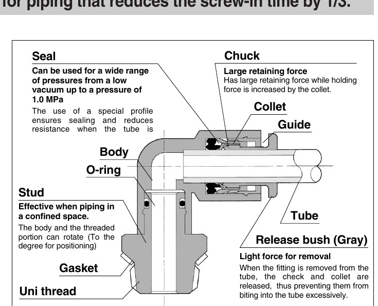
气动快插接头（SMC KQ2 一类）：卡爪咬管、密封圈密封，按解锁套后拔出
SMC KQ2 这类气动快插接头在管子推到位后，不锈钢卡爪（chuck）咬住管外壁，由密封圈对管外壁密封；拔管时按下解锁套（release bush），卡住管壁的卡爪和卡套被松开，管子才能轴向拔出。它锁的是「管子」，断开后管路是敞开的。后面一篇液压平面阀快换则是公母各带截止阀，锁的是「接头的两半」。

液压平面阀快速接头（ISO 16028）：双向截止阀与套筒钢球锁，区别于气管快插
ISO 16028 平面阀液压快换的公头（插头）和母头（插座）端面几乎平齐，内部各有一枚弹簧常闭的平面阀：对接时先让两个平面贴合，再同步顶开阀芯通油；分开时阀芯先回座，再离开端面。两半靠母头套筒把锁球压进公头环槽来保持。它和气管快插不是同一类锁——气管快插用卡爪咬住管外壁、断开后管路敞开；这里锁的是接头的两半，断开后两侧各自截止。
灶具旋钮轴向解锁：先推或拉解除转动约束，阀芯压紧与解锁分工
旋钮的轴向动作不是独立电按钮，而是改变转动许可；必须先解除几何锁止再旋转，阀芯密封预压与解锁回位不能混作一根弹簧。

电动工具电池包：滑轨插入与按压锁舌（得伟拆解）
手持电动工具的可换电池包，典型动作是：包体沿工具上的滑道推到位，锁舌被弹簧顶进工具侧的槽里，电触点同时对上；要取下时按按钮，按钮带动锁舌缩回，再沿滑道抽出。充电头网拆得伟 DCB184（铭牌 18V / 20V Max、6.0Ah、90Wh），前端是黑色按压开关，顶部是内凹插座和卡扣，外壳 4 颗螺丝；iFixit 拆 DCF840 所配电池时，同样先拧 4 颗螺丝，并明确标出「把电池锁在工具上的那根锁舌弹簧」。两只包不是同一型号，锁的细节不能混用，但机械逻辑一致。

电柜三点连杆锁：一点把手驱动上下连杆把柜门多点锁在框上
三点连杆锁用一个把手或锁芯，在门内侧通过连杆锁（杆控制器）把旋转变成上下两根杆的直线运动，让柜门在顶部、中部和底部同时扣住门框。EMKA 把它写成「杆控制器将轴向旋转运动转化为两根杆的垂直运动」；海坦则写成锁柄内凸轮带动上下传动杆反向伸出或缩回。单点转舌锁在高门板上压不均密封条，这是它要解决的问题。旋转把手（swinghandle）通常只是这套系统的操作端，不是另一种机构。

电柜压缩式门锁（Southco E3 与 EMKA 1022）：先转舌再轴向压缩密封条
压缩式电柜锁把一次连续旋转分成两段：先让锁舌转到门框后方，再继续转动使锁轴带着锁舌做轴向移动，把门板拉向门框、压紧密封条。Southco E3 VISE ACTION 在 19.1 mm 规格上给出可量化的 6.4 mm 压缩行程；EMKA 1022 压紧锁则写成「再转 90°，锁舌沿轴向移动 6 mm」。它和四分之一转快锁都有「先转进去」的动作，但本篇多出一段可测量的轴向压缩，用来对付密封条，而不是只靠 90° 凸轮钉把面板拉住。
翻盖式按键防误触：铰链、自动回盖弹簧与独立按钮
在普通按钮外增加必须先掀开的刚性盖，盖绕铰链打开后才露出操作面；开盖力、按钮力和密封等级需要独立定义。
联排按钮共享闩条：按新键释放旧键，互锁不自动等于禁止双按
各按钮上的斜面／凸肩推动一条横向闩条，越过斜面后在倒扣处保持；另一个按钮推动闩条即可释放先前选择。
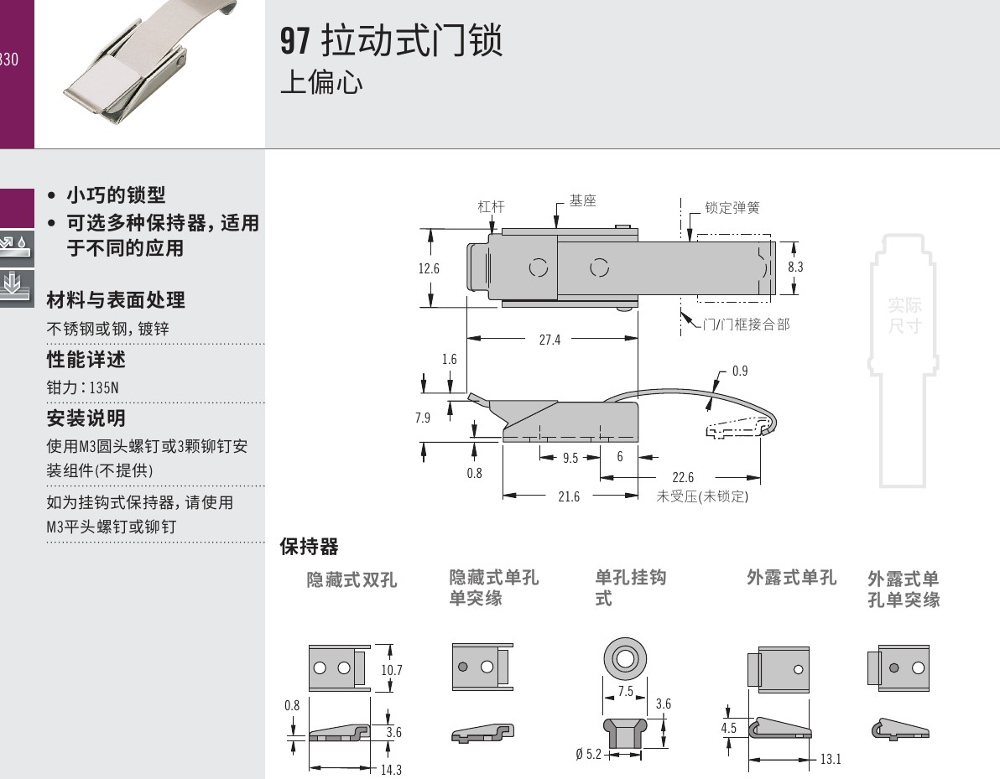
过中心拉伸搭扣（Southco 97）：杠杆过死点自锁，把箱盖拉向箱体
过中心拉伸搭扣（draw latch / over-center latch）用杠杆拉动钩在箱盖保持器上的拉紧件，当杠杆销越过「底座铰点与保持器」的连线后，拉力会把杠杆压向关闭止挡，箱盖被拉向箱体并自锁；要打开必须把杠杆再扳回死点另一侧。Southco 97 小型目录给出钳力 135 N，较大规格分轻载 310 N 与重载 670 N。它和四分之一转快锁不是同一结构：本篇是杠杆过死点拉紧，不是 90° 凸轮钉。
防变形静音 Push-Push 按压弹跳锁（ITW 专利 EP1596030）
经典的按压弹跳锁用「心形槽 + 随动销」实现按一下锁、再按一下弹开；这件 ITW 专利针对夹爪长期闭合后塑料蠕变（set）张不开、刮住撞销发出噪音甚至打不开的问题，在每个夹爪上加一根销、插进外壳上的斜向导槽，让夹爪在每次动作时被**强制**完全张开/闭合。

飞行箱嵌入式蝴蝶锁：旋转翼板 180° 钩住保持器（对照直线拉扣）
飞行箱常用的蝴蝶锁（butterfly latch / twist catch）不是把一根长杠杆翻过去做直线拉紧，而是用手抠起并旋转一块翼板，内部凸轮或偏心带动锁舌钩住箱盖上的保持器，再把翼板压回与箱面齐平；TCH 把开合写成 180° 旋转。沉盘把机构藏进箱壁，便于堆叠。它与拉伸搭扣（draw latch）都可能带过中心，但运动副不同，不能当成同一结构。
齿轮/蜗杆传动 1 篇

力反馈 1 篇
弹簧与缓冲 11 篇
Ergotron CF 恒力螺旋弹簧支架（对比气弹簧）
Ergotron 的 CF（Constant Force）支架不用气弹簧，而用专利的螺旋卷簧：在行程里用接近均匀的力去平衡屏幕，再靠一颗调节螺丝覆盖一个重量区间。和气弹簧臂相比，官方和中文代理都强调「力更耐久、可再调」；代价是机械弹簧可能有噪声，而且售价更高。气弹簧整臂的张力螺丝和悬停调法见 显示器气弹簧支架：张力螺丝与悬停平衡。
带拉环弹簧分度销：弹簧保持插入，拉出后转 90° 停在槽上
带休息位的弹簧分度销（index plunger / 旋钮柱塞自锁型）靠内置弹簧把销顶进定位孔或 V 槽；要让开时，拉开环或旋钮使销缩回，再转 90°，让拉环落在槽口上，销就会保持缩回，松手也不弹回去。再拉一下转回 90°，弹簧又把销推出来。它不是球头快卸销：快卸销是按压按钮收起杆上的钢珠，以便从通孔里抽出整根销，本篇是带螺纹套的弹簧柱塞。
微软 Surface Book 形状记忆合金（肌肉线）电控分离锁
Surface Book 的屏幕和键盘底座之间靠「锁舌插进锁座、弹簧把滚子楔住」锁死；按键后给一根镍钛形状记忆合金丝通电加热，丝收缩约 3%，通过滑轮和摇臂把滚子拉开，屏幕就能取下。滚子同时充当「公差吸收器」，让锁座可以做到间隙 < 0.1 mm、几乎零旷量。
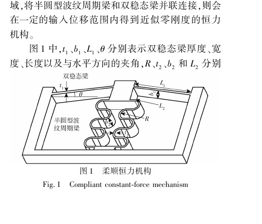
恒力柔顺机构：半圆波纹正刚度梁与双稳态负刚度梁并联抵消
恒力柔顺机构把一段近似正刚度的柔顺梁和一段带负刚度的双稳态梁并联（或按同样原则组合）：在一段行程里正、负刚度大致抵消，输出力几乎不随位移变化。它靠梁的几何，而不是发条盒或配重。刘敏等用半圆波纹周期梁做正刚度、双稳态梁做负刚度，3D 打印 PLA 样机在 1.1–6.2 mm 行程内得到约 18.8 N 的恒力。
按动圆珠笔：旋转凸轮的按压伸缩机构
按动笔用「按钮/推杆（plunger）+ 可旋转凸轮体（cam body）+ 笔杆内固定挡块（stop members）+ 弹簧」组成旋转分度机构：每按一次凸轮体转一格，交替落在挡块顶上（笔芯伸出锁定）或滑进挡块间隙（笔芯缩回）。

旋转阻尼器（缓降盖板）：硅油黏性、水平型与垂直型的扭矩曲线
马桶盖「松手慢慢落下」靠的是一个装在转轴上的小油缸：转子在灌满硅油的壳体里转，油的黏性阻力产生制动扭矩。Bansbach 的结构说明讲清了它的三个特性：**温度越低扭矩越大、转速越快扭矩越大、原则上双向都有扭矩（要单向就加单向离合器）**，目录额定扭矩在 20 rpm 下测得。TOK 的目录给出选型方法：T = m × g × ℓ（例：0.408 kg、重心 0.25 m → 1.0 N·m），并且把限位角阻尼器分成「水平型」（越接近水平扭矩越大，用于马桶盖、垃圾桶盖）和「垂直型」（水平时最大，下垂时变小，用于面包柜、抽油烟机翻板）。

显示器气弹簧支架：张力螺丝与悬停平衡
桌面显示器气弹簧支架用上臂里的气弹簧去抵消屏幕重量：拧臂上的「+ / −」张力螺丝，把气弹簧的推力调到和屏幕重力平衡，屏幕就能在行程里随手悬停。本篇只写整臂的堆叠——桌夹或穿孔底座、下臂、上臂气弹簧、VESA 头和倾角摩擦关节——不剖开气缸。气弹簧手感更线性、更顺，但密封件会慢慢漏力；和机械/恒力弹簧的取舍见 Ergotron CF 恒力螺旋弹簧支架（对比气弹簧）。

气弹簧内部结构：活塞阻尼孔与氮气预压
气弹簧是封闭缸筒里预充高压氮气的蓄能元件：活塞两侧气压其实相等，伸出力来自「气压作用在活塞杆内端面、外侧只有大气压」的面积差；活塞上的阻尼孔让气体（和油）按规定流量穿过活塞，从而限制伸缩速度，末端再靠油柱加大阻尼。
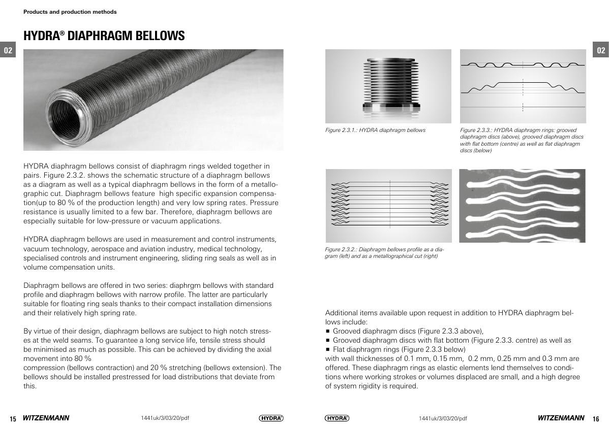
膜盒与焊接膜片波纹管：波纹膜片成对对焊，形成可轴向伸缩的密封弹性盒
膜盒（以及由多对膜片环焊成的膜片波纹管）把两片带波纹的金属膜片沿周边对焊成密封盒：压力或外力使膜片轴向鼓起或压扁，两片叠加后的中心位移大约是单片的两倍。它和管道用 U 形膨胀节都靠金属弹性壁吸收轴向位移，但是封闭盒、行程与有效面积的定义都不同，不能当成把膨胀节截短的同一零件。

金属波纹管轴向补偿器（膨胀节）：单式波纹管吸收管道轴向热位移，刚度由单波刚度除以波数得到
金属波纹管轴向补偿器（膨胀节）用成型波纹管做弹性件，接在管道或设备之间，靠波纹的轴向伸缩吸收热胀冷缩；单式轴向型由一个波纹管加端管或法兰组成，主要吸收轴向位移，并且（按钱逸的定义）不能承受波纹管的压力推力。它不是轴对中用的联轴器。
键盘内胆Gasket悬置：把按键触底载荷从刚性螺柱改经弹性垫传到壳体
轴、定位板和PCB形成内胆，由周边Poron垫与壳体隔开；研究的是整块支承系统的缓冲，不是另一颗轴体。
悬停支架 2 篇
Ergotron CF 恒力螺旋弹簧支架（对比气弹簧）
Ergotron 的 CF（Constant Force）支架不用气弹簧，而用专利的螺旋卷簧：在行程里用接近均匀的力去平衡屏幕，再靠一颗调节螺丝覆盖一个重量区间。和气弹簧臂相比，官方和中文代理都强调「力更耐久、可再调」；代价是机械弹簧可能有噪声，而且售价更高。气弹簧整臂的张力螺丝和悬停调法见 显示器气弹簧支架：张力螺丝与悬停平衡。
显示器气弹簧支架：张力螺丝与悬停平衡
桌面显示器气弹簧支架用上臂里的气弹簧去抵消屏幕重量：拧臂上的「+ / −」张力螺丝，把气弹簧的推力调到和屏幕重力平衡，屏幕就能在行程里随手悬停。本篇只写整臂的堆叠——桌夹或穿孔底座、下臂、上臂气弹簧、VESA 头和倾角摩擦关节——不剖开气缸。气弹簧手感更线性、更顺，但密封件会慢慢漏力；和机械/恒力弹簧的取舍见 Ergotron CF 恒力螺旋弹簧支架（对比气弹簧）。
磁吸 6 篇
FIDLOCK SNAP：圆形磁吸按扣侧向滑开（对照 V-BUCKLE 上掀）
FIDLOCK SNAP 是一对圆形公母按扣：靠近时钕磁铁把两半吸到一起，机械卡口自动锁死；开启不是上掀，而是沿侧向把公件滑出（规格书统一写 Opening: slide sideways）。它和库内已有的 FIDLOCK V-BUCKLE：磁吸引导到位后再由机械扣锁死 同属「磁吸引导 + 机械锁、开启方向与闭合方向不同」，但几何完全不同：V-BUCKLE 是织带扣、掀盖/拉片打开，SNAP 是可螺丝或缝纫到面料上的圆形按扣。
FIDLOCK V-BUCKLE：磁吸引导到位后再由机械扣锁死
FIDLOCK 的核心不是「用磁力抓住负荷」，而是：磁铁把公母拉到对位，弹簧/机械扣再咬死；打开时先把机械扣错开，磁力随之减弱，两半才能分开。V-BUCKLE 把这套概念做成一块不锈钢 V 形翻盖：合上时磁吸引导自动扣上；拉开翻盖上的拉片即可打开；而且载荷越大越难打开（官网所称 self-securing）。这和 任天堂 Switch 2 Joy-Con 2 磁吸连接 那种「磁铁定位 + 电触点」、主要靠磁力保持的连接不是同一件事。
Insta360 磁吸快拆配件 2.0：磁铁对中后由滑动锁承力
Insta360 磁吸快拆配件 2.0（CINSEAVP）用磁铁把底座吸到相机底部的正确位置，真正承力的是必须拨到位的滑动锁：橙色标记完全露出才算锁死；拆卸要先把滑锁拨回，再按住侧面释放按钮才能拉开。官网明确警告：不要在剧烈振动、高频冲击（如越野骑行）中使用，否则可能跌落损坏相机。
Peak Design SlimLink：方形陶瓷凹槽磁吸预定位与弹簧卡舌硬锁
Peak Design 的 SlimLink 把「磁铁预定位」和「机械硬锁」做在同一套方形接口里：手机壳或 Universal Adapter 背面有带陶瓷边缘的方形凹槽，凹槽周围藏磁铁；对接到 Out Front 这类硬锁支架时，磁铁先把接口吸准，两侧弹簧卡舌咬入凹槽锁死，按任意一侧按键即可释放。磁铁不是骑行时的主承力件。
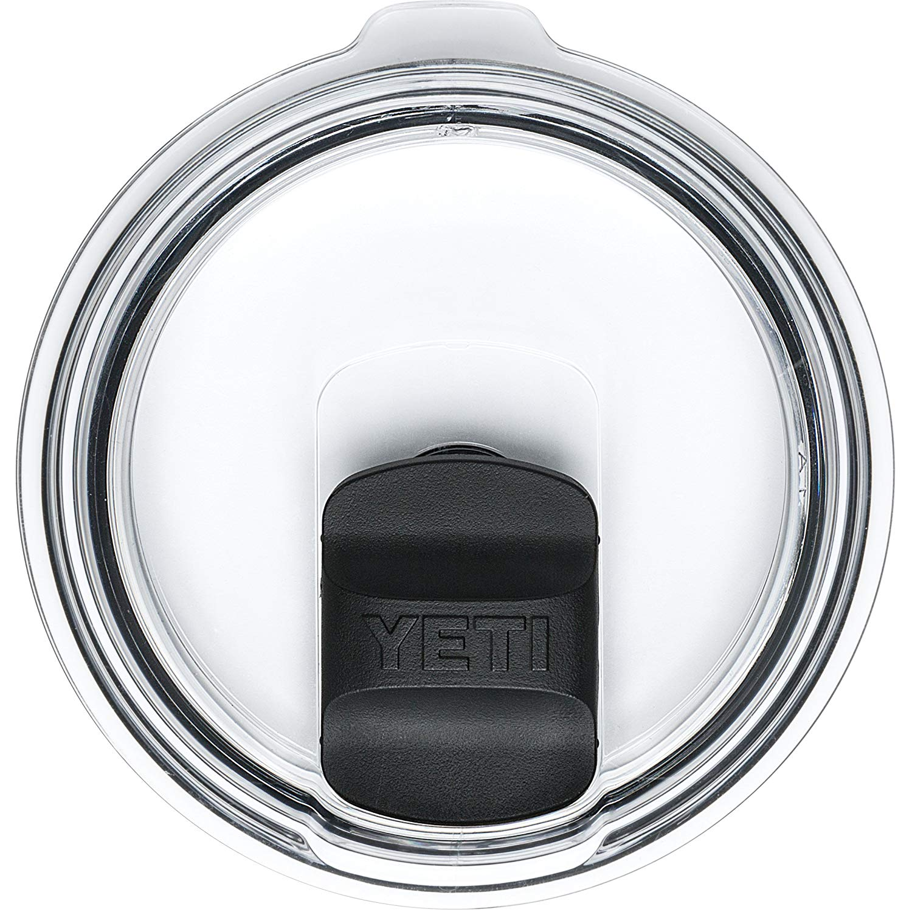
YETI MagSlider 杯盖磁吸滑盖：滑块与盖内磁铁夹持，开闭两端保持
YETI MagSlider 在杯盖顶面的凹槽轨道里放一块可滑动的盖板：滑块和盖内都有磁铁，磁力把滑块吸在轨道上，并在打开、关闭两端把滑块稳住；沿轨道一推即可露出或盖住饮水口，整块滑块还可以克服磁力向上拔下来清洗。它不是螺纹旋盖，也不是只能吸住、不能滑动的门吸。
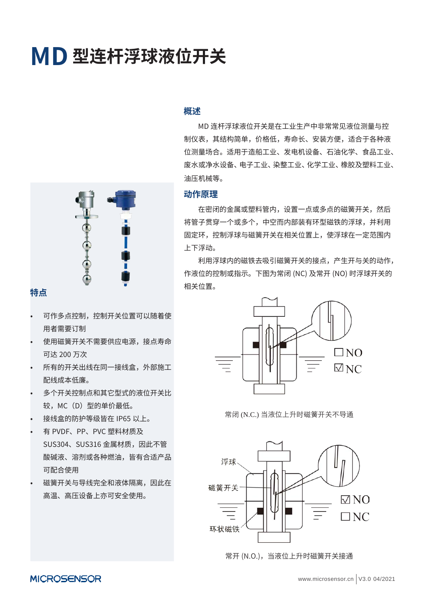
磁浮子液位开关：浮子内磁铁与管内簧管磁耦合
连杆浮球液位开关把磁簧管封在一根封闭导管里，再把内装环形磁铁的中空浮子套在导管上：液位升降带动浮子沿导管移动，环磁隔着管壁吸动簧管接点，从而给出开或关。电气部分完全不接触液体，簧管动作也不需要给传感器供电。它是磁耦合传讯，不是把浮子「吸」在某个位置上当机械锁。
柔顺机构/双稳态 6 篇
IBM Beam Spring键：片簧越中反转并向上提起飞板
柱塞向下压弓形片簧，片簧越中过后通过U形飞簧将电容飞板向上提起；按下键帽与感测板的运动方向相反。
IBM屈曲弹簧键：螺旋簧失稳产生力矩，驱动翻转锤
压缩螺旋簧并非只提供线性回弹，达到临界状态后侧向屈曲产生力矩，使下方枢轴锤翻转；手感与触发由同一失稳事件关联。
Nifco 经典心形槽 Push-Push：U 形销与片簧（对照 ITW 防变形版）
Nifco 专利 US4660871 把按压弹跳做成「平面心形变深槽 + 金属 U 形销 + 片簧」：U 形销一端走滑块顶面的心形槽，另一端铰接在壳体孔里，片簧始终把销压向槽底；槽底深浅台阶逼销单向绕心形走一圈，按一下锁、再按一下弹开。滑块下方还有斜向卡爪去抓门板上的撞销。这和 ITW 用塑料随动件加导槽强制开合夹爪、以及按动笔用同轴旋转分度凸轮，都不是同一套零件。
跷板开关的弹簧柱塞：滑动压点、摇动触桥与中位自定心
外部跷板带着弹簧柱塞沿触桥滑动，压点跨越支承位置后改变触桥姿态；柱塞端部与触桥的匹配决定中位一致性。
金属锅仔片阵列：直径、力值、行程与寿命互换
金属锅仔片是一枚双稳态金属圆片：按到峰值力后中心塌陷，发出「咔嗒」并接通电路，松手弹回。直径、力值和寿命要一起选——Snaptron 手册里，同是 6 mm 的 F06180（180 g）寿命做到 500 万次，F06300（300 g）却只标 1 万次。硅胶在这里如果出现，只是上面的传力帽；PET 叠层如果出现，只是定位和电路的配角，主角仍是这枚金属圆片。
防变形静音 Push-Push 按压弹跳锁（ITW 专利 EP1596030）
经典的按压弹跳锁用「心形槽 + 随动销」实现按一下锁、再按一下弹开；这件 ITW 专利针对夹爪长期闭合后塑料蠕变（set）张不开、刮住撞销发出噪音甚至打不开的问题，在每个夹爪上加一根销、插进外壳上的斜向导槽，让夹爪在每次动作时被**强制**完全张开/闭合。
扭转锁 1 篇

标准接口 1 篇
柔顺机构 13 篇

RCC 远程柔顺手腕：把柔顺中心配置到装配孔口附近实现倒角自动对中
远程柔顺手腕（RCC / Remote Center Compliance）不用电机力控去“找孔”，而是把弹性元件布置成：接触力作用在一个位于或靠近插入倒角的远程柔顺中心时，只产生平移、不产生转动；力矩则只产生转动、不产生平移。这样倒角上的接触力会自动把轴与孔对齐。ATI 9116 系列用上下板之间的剪切垫把这个中心投射到工具侧以外；Draper 的 US 4,098,001 则用沿会聚半径布置的柔性元件，把中心放到插入件端部附近。它不是气弹簧重力平衡，也不是微动台里的直线导轨。
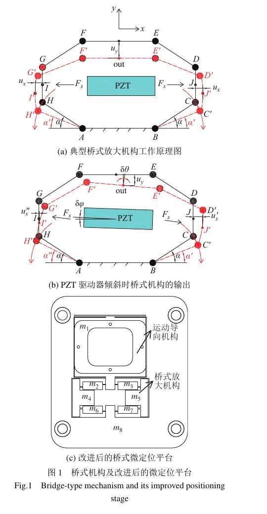
压电驱动桥式柔性铰链位移放大机构：理想放大比与铰链柔度造成的折减
压电叠堆自己的行程很小，桥式柔性机构用两对斜臂把输入的水平小位移变成更大的竖直输出。按刚性杆几何可以得到一个理想放大比，但铰链并非理想转动副、斜臂会变形、压电安装若倾斜还会带出寄生转角，实际放大比总要打折。杜志元、闫鹏在桥式上增加运动导向和凸台加强，实验得到放大比 6.4、固有频率 345.0 Hz；Wei 等则给出覆盖并联、对齐、菱形三类桥的一般分析式，并说明把柔性铰当理想铰来算会不准。
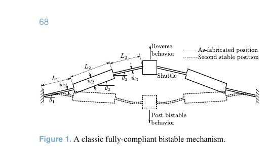
双稳态柔顺机构：完全柔性屈曲梁与Young型跳转的几何稳态
双稳态柔顺机构用柔顺梁或柔顺连杆的几何与弹性，在两个无需持续供能就能保持的稳定平衡位置之间跳转（snap-through）：驱动力先升高再经过负刚度段，越过不稳定平衡点后落到第二个稳态。稳态由屈曲或预应力构型保持，不是靠摩擦锁，也不是按键里螺旋簧失稳打锤或片簧越中抬飞板。

商品柔性导向微位移台：无摩擦柔顺结构导向，行程与分辨率来自弹性导轨而不是滚动导轨
这类商品微位移台用柔性铰或平行板簧把运动台「挂」在基座上，位移来自弹性导轨的弯曲而不是滚珠或滑块：没有摩擦和游隙，分辨率可以到纳米级，但行程通常只有几十到几百微米（压电型）或数毫米（复合柔性手动型），不能把它和丝杠加滚珠导轨的位移台当成同一种结构。
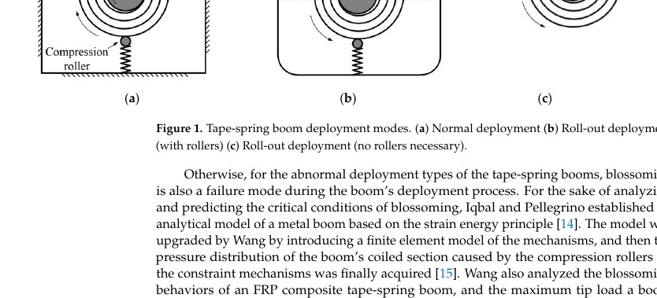
复合材料带簧双稳态：开口圆柱壳在伸直与盘卷构型间跳转
开口圆柱壳形的复合材料带簧（tape spring / 双稳态可展伸杆）可以稳定在伸直和盘卷两种构型：伸直时截面保持开口圆曲率，盘卷时沿长度方向卷到卷轴上，由层合铺层存储和释放应变能。第二种稳态能把已卷区段保持住，因此还可以做「顶端固定、卷轴向外滚出」的卷出展开，不必再另加压辊把卷段压住。
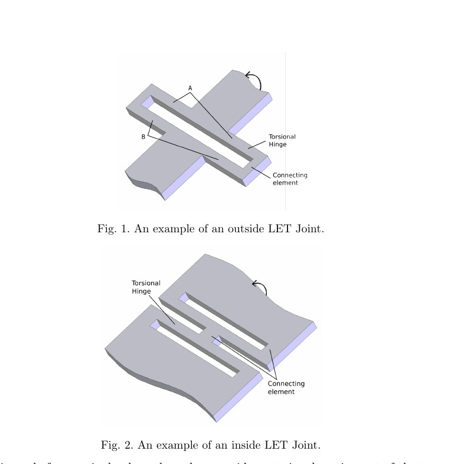
层合弹出扭转铰（LET Joint）：薄板窄梁扭转提供面外转动
LET（Lamina Emergent Torsional）铰从一块平面板里切出两组平行的窄扭转段，再用短连接段把它们串、并联起来：机构仍从这一层里「弹」到三维，但面外转动主要靠窄梁的扭转，而不是靠注塑薄膜活铰那种弯曲带，也不是靠打印时预留的间隙铰。对称布置让每根扭转梁只分担总转角的一部分，从而降低单根应力。

平行板簧直线导轨与双平行四边形：对称构型抵消寄生横向位移
一对平行板簧（或平行四边形柔性铰链机构）可以当作近似直线导轨，但终端在沿驱动方向移动时，还会带出垂直方向的耦合误差；把两个相同的平行四边形沿驱动轴线对称布置，组成双平行四边形，就可以抵消这条寄生横向位移，得到更接近理想移动副的输出。清华杜云松等给出了构型说明和一组铰链/机构尺寸；上海工程技术大学的二维微动台用复合双平行四杆加结构对称来消除轴间耦合和寄生位移。这不是短切口转动副，也不是指点杆那种微应变传感。

平行梁式称重传感器弹性体：双孔平行梁把载荷变成孔壁最薄处的弯曲应变，并用修锉调整四角误差
平行梁式称重传感器把弹性体做成双孔（或上下平行梁）结构：载荷使梁弯曲，电阻应变计贴在圆孔壁厚最小的四个位置，组成差动全桥把重量变成电压；几何上它和平行板簧微动导轨同源，但目的是把指定截面的应变做稳定、可补偿，而不是提供无摩擦直线导轨。
恒力柔顺机构：半圆波纹正刚度梁与双稳态负刚度梁并联抵消
恒力柔顺机构把一段近似正刚度的柔顺梁和一段带负刚度的双稳态梁并联（或按同样原则组合）：在一段行程里正、负刚度大致抵消，输出力几乎不随位移变化。它靠梁的几何，而不是发条盒或配重。刘敏等用半圆波纹周期梁做正刚度、双稳态梁做负刚度，3D 打印 PLA 样机在 1.1–6.2 mm 行程内得到约 18.8 N 的恒力。
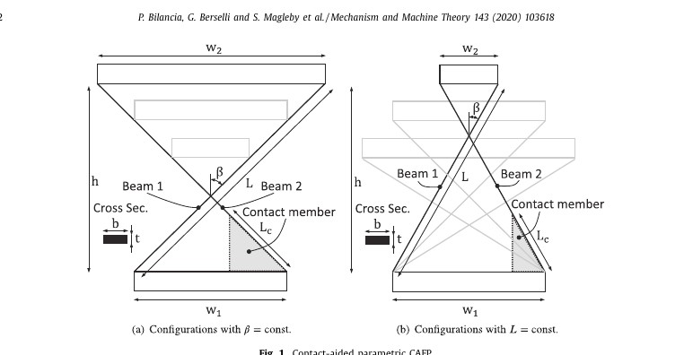
接触辅助十字簧片柔性铰（CAFP）：接触缩短簧片自由长度以改变单向刚度
接触辅助十字簧片柔性铰（contact-aided CAFP）在普通十字交叉簧片旁边，加一块固定在机架上的接触块：朝某一侧转动时，其中一根簧片贴上接触面，自由长度被缩短，整铰刚度明显提高；朝另一侧转动时不接触，刚度仍接近原来的十字簧片。这样，同一个柔性转动副在顺时针和逆时针可以表现得不一样，而不必改成两套铰链。
膜盒与焊接膜片波纹管：波纹膜片成对对焊，形成可轴向伸缩的密封弹性盒
膜盒（以及由多对膜片环焊成的膜片波纹管）把两片带波纹的金属膜片沿周边对焊成密封盒：压力或外力使膜片轴向鼓起或压扁，两片叠加后的中心位移大约是单片的两倍。它和管道用 U 形膨胀节都靠金属弹性壁吸收轴向位移，但是封闭盒、行程与有效面积的定义都不同，不能当成把膨胀节截短的同一零件。
金属波纹管轴向补偿器（膨胀节）：单式波纹管吸收管道轴向热位移，刚度由单波刚度除以波数得到
金属波纹管轴向补偿器（膨胀节）用成型波纹管做弹性件，接在管道或设备之间，靠波纹的轴向伸缩吸收热胀冷缩；单式轴向型由一个波纹管加端管或法兰组成，主要吸收轴向位移，并且（按钱逸的定义）不能承受波纹管的压力推力。它不是轴对中用的联轴器。
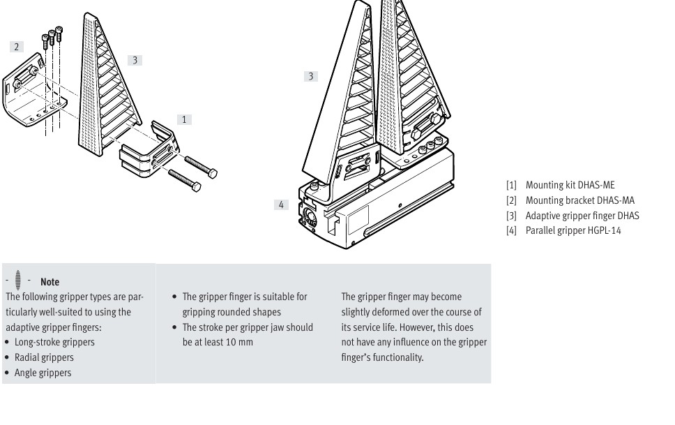
鳍条效应自适应夹指：Festo DHAS 斜肋梯形桁架包络抓取
鳍条效应夹指用两根在指尖会合的柔性腹板，中间用间隔布置的斜肋以柔性铰连成梯形桁架：指尖或指面受力时，肋条变形使手指弯向物体并形成包络（形封闭趋势）。它不是根部一个活铰的开合爪。Festo DHAS 把这一结构做成 TPE-U 量产手指，可滑入转接件后装到平行夹爪上；林群煦等用 TPU 打印了同类鳍条软爪，并另加可变刚度外骨骼做对比实验。
装配手腕 1 篇
滑盖 1 篇
杯盖 1 篇
快拆销 1 篇

正锁定位 1 篇
模块化快换 1 篇
旋转锁环 1 篇
位移放大 1 篇
双稳态 2 篇
双稳态柔顺机构：完全柔性屈曲梁与Young型跳转的几何稳态
双稳态柔顺机构用柔顺梁或柔顺连杆的几何与弹性，在两个无需持续供能就能保持的稳定平衡位置之间跳转（snap-through）：驱动力先升高再经过负刚度段，越过不稳定平衡点后落到第二个稳态。稳态由屈曲或预应力构型保持，不是靠摩擦锁，也不是按键里螺旋簧失稳打锤或片簧越中抬飞板。
复合材料带簧双稳态：开口圆柱壳在伸直与盘卷构型间跳转
开口圆柱壳形的复合材料带簧（tape spring / 双稳态可展伸杆）可以稳定在伸直和盘卷两种构型：伸直时截面保持开口圆曲率，盘卷时沿长度方向卷到卷轴上，由层合铺层存储和释放应变能。第二种稳态能把已卷区段保持住，因此还可以做「顶端固定、卷轴向外滚出」的卷出展开，不必再另加压辊把卷段压住。
微定位 1 篇
传感与限位 6 篇
安全门舌片联锁：专用执行器转动内凸轮，以直接断开动作打开 NC 触点
舌片式安全门联锁把开关本体装在机器上、把专用执行器装在门上：关门时执行器插入并转动内凸轮，NC 触点靠弹簧力闭合，控制系统判定门已关闭；开门时凸轮把 NC 触点强制推开，切断电路，即使启动按钮被按下机器也不能再开。IDEC 强调这种「直接断开动作」要求执行器到 NC 触点之间只有非弹性结构，即使触点已经熔焊，开门的力仍能把触点分开。它不是普通限位开关，也不是用螺丝刀就能拨动的门磁。
工业限位开关：在微动开关外面加防护壳和滚轮杠杆等致动器
工业限位开关（行程开关、极限开关）不是再发明一种触点，而是把一颗快动微动开关装进金属或强化树脂外壳，再配上柱塞、滚轮或杠杆等致动器，用来在机台外侧承受撞击、油水和粉尘。庆丰把它概括成「同一颗心脏，差在有没有穿盔甲」。天得 TZ 系列限位开关在庆丰文中的口径是防护 IP65–IP67，机械寿命 1000 万次、电气寿命 50 万次；同文列出的裸微动例如 Omron V-15 可到 250 VAC / 15 A，与库内已收录的鼠标用 D2FC（6 VDC / 1 mA）不是同一使用场合。
微波炉门三联联锁：第一、第二联锁断开供电，监控开关在门开时短接熔断保护
微波炉用门钩去按一组微动开关，而不是只靠一只门磁：关门后第一、第二联锁开关接通，给高压变压器等供电，同时门监控开关断开；开门后两只联锁先断开切断供电，监控开关再接通，一旦联锁拒动或粘连，监控开关就把电源短接，让熔断器断开，避免炉门打开时仍在发射微波。导文对格兰仕 WP700（P7021TP-6）的拆解写明，这一先断后通的时间差由下门钩的曲线长度决定；Merrychef 402s 则用教科书式的 Primary、Secondary 和 Monitor 布置，并另加第四只开关给逻辑板发门状态。它不是普通门控微动的简单并联，也不是机床舌片安全门联锁。
机械式膜片与活塞压力开关：预紧弹簧设定动作点并触发微动开关
机械式压力开关不靠电子采样，而是让过程压力作用在膜片或活塞上，去克服一颗预紧弹簧；弹簧力由调整螺钉设定，测量元件的位移再触发电接点（常见为微动开关）。WIKA 介绍的紧凑型 PSM01 / PSM02（可调迟滞）带快插端子时高度为 50 mm，扳手宽度 24 和 27；膜片式版本最大可开关至 1.6 MPa，活塞式开关范围高达 32 MPa，过载安全限值可到膜片式 6 MPa、活塞式 35 MPa。它不是电子压力传感器加比较器，也不是把压力直接接到大电流主触头上。
滚珠倾斜开关：导电滚珠在重力下滚离凹槽，与导电凸点接触导通
贴片式倾斜滚珠开关在水平放置时，金属滚珠被限位台阶挡在凹槽里，不碰到导电凸点，电路断开；壳体倾斜到设计角度后，滚珠滚出凹槽并与凸点接触，输出一个简单的通断信号。颖鑫把内部零件写成金属座、金属滚珠、绝缘体、金属塞和限制器，并指出它比 MEMS 角度传感器精度低，但更省电、更小、成本更低。百灵 BL-3300 给出可核对的分档：直立时断开，向任一方向超过 25±10° 或 45° 后导通，电压 1.5–12 V，电流 20 mA，寿命 10 万次。它不是水银开关，也不是连续输出角度的惯性传感器。
磁浮子液位开关：浮子内磁铁与管内簧管磁耦合
连杆浮球液位开关把磁簧管封在一根封闭导管里，再把内装环形磁铁的中空浮子套在导管上：液位升降带动浮子沿导管移动，环磁隔着管壁吸动簧管接点，从而给出开或关。电气部分完全不接触液体，簧管动作也不需要给传感器供电。它是磁耦合传讯，不是把浮子「吸」在某个位置上当机械锁。
活动铰链/柔性铰链 1 篇
直线柔顺导轨 1 篇
弹性传感 1 篇
弹起机构 1 篇
凸轮与连杆 3 篇
按动圆珠笔：旋转凸轮的按压伸缩机构
按动笔用「按钮/推杆（plunger）+ 可旋转凸轮体（cam body）+ 笔杆内固定挡块（stop members）+ 弹簧」组成旋转分度机构：每按一次凸轮体转一格，交替落在挡块顶上（笔芯伸出锁定）或滑进挡块间隙（笔芯缩回）。
旋转凸轮开关：每一级最多两个触点，由凸轮按档位独立通断
旋转凸轮开关用一根操作轴带着多级凸轮，每一级最多布置两个触点，手柄转到某个角度时，该级凸轮决定这两个触点是接通还是断开，从而组合成多回路、多档位的控制逻辑。Kraus & Naimer Catalog 120 把 CG、CH、CHR 系列写到 25 A，档位角为 30°、45°、60° 或 90°，并给出三种接触系统：刚性双断银合金桥、多点交叉触点，以及用于低电压的镀金十字线 H 桥。它不是编码拨盘，也不是只有一对触点的钮子开关。
电柜三点连杆锁：一点把手驱动上下连杆把柜门多点锁在框上
三点连杆锁用一个把手或锁芯，在门内侧通过连杆锁（杆控制器）把旋转变成上下两根杆的直线运动，让柜门在顶部、中部和底部同时扣住门框。EMKA 把它写成「杆控制器将轴向旋转运动转化为两根杆的垂直运动」；海坦则写成锁柄内凸轮带动上下传动杆反向伸出或缩回。单点转舌锁在高门板上压不均密封条，这是它要解决的问题。旋转把手（swinghandle）通常只是这套系统的操作端，不是另一种机构。